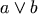
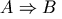
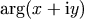
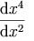

Descrizione sommaria: Linguaggio di
marcatura matematica (MathML) Versione 2.0
Precedente: 3 Marcatura di presentazione
Successivo: 5 Combinare marcatura di
presentazione e di contenuto
4 Marcatura di contenuto
4.1 Introduzione
4.1.1 L'intenzione della marcatura di
contenuto
4.1.2 Il campo
d'azione della marcatura di contenuto
4.1.3 Concetti
fondamentali della marcatura di contenuto
4.2 Guida all'uso degli
elementi di contenuto
4.2.1 Descrizione sommaria della sintassi e
dell'uso
4.2.2 Contenitori
4.2.3 Funzioni, operatori e
qualificatori
4.2.4 Relazioni
4.2.5 Condizioni
4.2.6 Sintassi e semantica
4.2.7 Mappature
semantiche
4.2.8 Costanti e
simboli
4.2.9 Tipi di
elementi del MathML
4.3 Attributi degli elementi
di contenuto
4.3.1 Valori
degli attributi degli elementi di contenuto
4.3.2 Attributi
che modificano la semantica della marcatura di contenuto
4.3.3 Attributi
che modificano la presentazione della marcatura di contenuto
4.4 Gli elementi della
marcatura di contenuto
4.4.1 Elementi token
4.4.2 Elementi di
contenuto fondamentali
4.4.3 Aritmetica,
algebra e logica
4.4.4 Relazioni
4.4.5 Analisi
matematica e calcolo vettoriale
4.4.6 Teoria
degli insiemi
4.4.7 Successioni
e serie
4.4.8 Funzioni classiche elementari
4.4.9 Statistica
4.4.10 Algebra lineare
4.4.11 Elementi
di mappatura semantica
4.4.12 Elementi
costanti e simboli
Come è stato notato nella sezione introduttiva di questa direttiva, la matematica può essere distinta dal suo uso di un linguaggio (relativamente) formale, la notazione matematica. Comunque, la matematica e la sua presentazione non dovrebbero essere viste come se fossero la stessa cosa. Le somme o i prodotti matematici esistono e sono significativi per molte applicazioni completamente senza tener conto di come sono rappresentati acusticamente o visivamente. L'intenzione della marcatura di contenuto nel Linguaggio di Marcatura Matematica è di fornire una codifica esplicita della struttura matematica sottostante di un'espressione, piuttosto che una riproduzione particolare per l'espressione stessa.
Ci sono molte ragioni per fornire una codifica specifica per il contenuto. Neanche un uso disciplinato e sistematico dei tag di presentazione riesce a catturare propriamente questa informazione semantica. Questo è perché senza informazioni aggiuntive è impossibile decidere se una presentazione particolare è stata scelta deliberatamente per codificare la struttura matematica o semplicemente per ottenere un particolare effetto visivo o acustico. In più, un autore che usa la stessa codifica per trattare sia con la presentazione che con la struttura matematica può trovare una particolare codifica di presentazione non disponibile semplicemente perché la convenzione la ha riservata per un diverso significato semantico.
Le difficoltà derivano dal fatto che ci sono relazioni molti-a-uno tra la presentazione e la semantica e viceversa. Per esempio il costrutto matematico `H moltiplicato per e' è spesso codificato usando un operatore esplicito come in H × e. In contesti di presentazione diversi, l'operatore di moltiplicazione potrebbe essere invisibile `He', o riprodotto con la parola detta `per'. Generalmente, sono possibili molte presentazioni diverse a seconda del contesto e delle preferenze di stile dell'autore o del lettore. Perciò, dato `He' fuori dal contesto può essere impossibile decidere se questo è il nome di un elemento chimico o di un prodotto matematico delle due variabili H ed e.
La presentazione matematica inoltre cambia con la cultura e con il tempo: alcune espressioni nel calcolo combinatorio oggi hanno un significato per un matematico russo e un altro completamente diverso per un matematico francese; si veda la Sezione 5.4.1 [Fogli di stile notazionali] per un esempio. Le notazioni possono perdere valore, per esempio l'uso dei simboli musicali diesis e bemolle per indicare i massimi e i minimi [Chaundy1954]. Una notazione in uso nel 1644 per la moltiplicazione dell'esempio precedente era He [Cajori1928].
Quando codifichiamo esplicitamente la struttura matematica sottostante, senza tenere conto di come è presentata acusticamente o visivamente, possiamo scambiare informazioni in modo più preciso con quei sistemi capaci di manipolare la matematica. Nell'esempio banale sopra, un tale sistema potrebbe sostituire valori per le variabili H ed e e valutare il risultato. Altre interessanti aree di applicazione comprendono libri di testo interattivi ed altri strumenti di aiuto didattico.
La semantica della notazione matematica generale non è una questione di consenso. Sarebbe un lavoro enorme codificare sistematicamente la maggior parte della matematica - un compito che non potrà mai essere completo. Invece, il MathML rende espliciti un numero relativamente piccolo di costrutti matematici comuni, scelti attentamente perché siano sufficienti in molte applicazioni. In più fornisce un meccanismo per associare la semantica con i nuovi costrutti notazionali. In questo modo i concetti matematici che non sono nella collezione di elementi di base possono ancora essere codificati (Sezione 4.2.6 [Sintassi e semantica]).
L'insieme di base degli elementi di contenuto è scelto in modo che questi siano adeguati per la semplice codifica della maggior parte delle formule usate dalle elementari alla fine delle scuole superiori negli Stati Uniti, e probabilmente fino ai primi due anni di college, che corrisponde al Livello A o laurea in Europa. Le aree coperte in qualche modo dal MathML sono:
Non si sostiene, né si suggerisce, che l'insieme di elementi proposto sia completo per queste aree, ma l'aver fornito estensibilità agli autori allevia notevolmente ogni problema che le omissioni da questo elenco finito potrebbero causare.
Il progetto degli elementi di contenuto del MathML è guidato dai seguenti principi:
PCDATA o da
elaborazioni aggiuntive come l'analisi della precedenza degli
operatori.
L'obiettivo primario della codifica del contenuto è stabilire connessioni esplicite tra strutture matematiche e i loro significati matematici. Gli elementi di contenuto corrispondono direttamente a parti dell'albero di espressione matematica sottostante. Ogni struttura ha una semantica predefinita associata e c'è un meccanismo per associare nuove definizioni matematiche con nuovi costrutti.
Vantaggi significativi dell'introduzione di tag specifici di contenuto sono:
Le espressioni descritte in termini di elementi di contenuto devono ugualmente essere riprodotte. Per espressioni comuni di solito sono chiare le riproduzioni visive predefinite. `Preoccupati del senso e i suoni si preoccuperanno di loro stessi' scrisse Lewis Carroll [Carroll1871]. Le riproduzioni predefinite sono incluse nella descrizione dettagliata di ogni elemento presente nella Sezione 4.4 [Gli elementi della marcatura di contenuto].
Per raggiungere questi obiettivi la codifica di contenuto del MathML si basa sul concetto di albero di espressione. Un albero di espressione di contenuto è costruito da una collezione di più oggetti primitivi, chiamati qui contenitori e operatori. Il MathML possiede un ricco insieme di oggetti contenitori ed operatori predefiniti, come pure di costrutti per combinare contenitori e operatori in modi matematicamente significativi. La sintassi e l'uso di questi elementi e costruzioni di contenuto è descritto nella sezione successiva.
Poiché l'intenzione della marcatura di contenuto del MathML è quella di codificare espressioni matematiche in modo tale che la struttura matematica delle espressioni sia chiara, la sintassi e l'uso della marcatura di contenuto devono essere abbastanza consistenti per facilitare l'interpretazione semantica automatizzata. Non devono esserci dubbi quando, per esempio, si intende una somma reale, un prodotto o un'applicazione di funzioni e se sono presenti numeri specifici, devono esserci abbastanza informazioni presenti per ricostruire il numero corretto ai fini del calcolo. Naturalmente, è ancora a carico di un elaboratore MathML-compatibile decidere cosa deve essere fatto con una tale espressione basata sul contenuto, e il calcolo è solo una delle molte opzioni. Un riproduttore o un programma di scrittura strutturato può semplicemente usare i dati e la sua conoscenza incorporata della struttura matematica per riprodurre l'oggetto. In alternativa, può manipolare l'oggetto per costruire un nuovo oggetto matematico. Un sistema più orientato al calcolo può tentare di eseguire l'operazione o la valutazione della funzione indicata.
Il fine di questa sezione è descrivere l'uso consistente inteso. Le richieste coinvolgono più che soddisfare semplicemente la struttura sintattica specificata da una DTD XML. La non conformità all'uso come descritto in seguito risulterà in un errore MathML, anche se l'espressione può essere sintatticamente valida secondo la DTD.
Oltre alle informazioni sull'uso contenute in questa sezione, la Sezione 4.4 [Gli elementi della marcatura di contenuto] dà un elenco completo di ogni elemento di contenuto, fornendo informazioni di riferimento sui loro attributi, la sintassi, esempi e semantica e riproduzione predefinita suggerite. Le regole per l'uso della marcatura di presentazione all'interno della marcatura di contenuto sono spiegate nella Sezione 5.2.3 [Marcatura di presentazione nella marcatura di contenuto]. Una grammatica EBNF informale che descrive la sintassi per la marcatura di contenuto è data nell'Appendice B [Grammatica di convalida della marcatura di contenuto].
La codifica del contenuto del MathML è basata sul concetto di albero di espressione. Come regola generale, i nodi terminali dell'albero rappresentano oggetti matematici fondamentali, quali numeri, variabili, operazioni aritmetiche e così via. I nodi interni dell'albero generalmente rappresentano una qualche applicazione di funzione o un'altra costruzione matematica che forma un oggetto composto. L'applicazione di funzioni fornisce l'esempio più importante; un nodo interno potrebbe rappresentare l'applicazione di una funzione a vari argomenti, che a loro volta sono rappresentati dai nodi terminali al di sotto del nodo interno.
Gli elementi di contenuto del MathML possono essere raggruppati nelle seguenti categorie a seconda del loro uso:
Questi sono i blocchi costitutivi delle espressioni di contenuto del MathML. Ogni categoria è discussa in seguito in una sezione separata. Nel resto di questa sezione presenteremo brevemente alcuni dei più comuni elementi di ogni tipo, e considereremo le costruzioni generali per combinarli in modi matematicamente significativi.
Gli alberi delle espressioni di contenuto sono costruiti a partire
dagli oggetti matematici fondamentali. Al livello inferiore le
foglie sono incapsulate in elementi non vuoti che definiscono
il loro tipo. I numeri e i simboli sono marcati dagli elementi
token cn e ci. Costrutti più
elaborati come insiemi, vettori e matrici sono marcati a loro volta
con elementi che denotano il loro tipo, ma piuttosto che contenere i
dati direttamente, questi elementi contenitori sono costruiti a
partire da altri elementi. Gli elementi sono utilizzati per
identificare chiaramente gli oggetti sottostanti. In questo modo si
può usare l'analisi standard dell'XML e si possono utilizzare
gli attributi per specificare le proprietà globali degli
oggetti.
I contenitori come <cn>12345</cn>,
<ci>x</ci> e <csymbol
definitionURL="mySymbol.htm"
encoding="text">S</csymbol> rappresentano
numeri matematici, identificatori e simboli definiti esternamente. In
seguito vedremo elementi operatori come plus
o sin, che forniscono accesso alle operazioni matematiche
fondamentali e alle funzioni applicabili a tali oggetti. Contenitori
aggiuntivi come set per gli insiemi e matrix
per le matrici sono forniti per rappresentare vari oggetti composti
comuni.
Per esempio, il numero 12345 è codificato come
<cn>12345</cn>
Gli attributi e il contenuto PCDATA insieme forniscono
i dati necessari all'applicazione per analizzare il numero. Per
esempio, si assume la base 10 come predefinita, ma per comunicare che
il dato sottostante è in realtà scritto in base 8 basta
impostare l'attributo base ad 8 come in
<cn base="8">12345</cn>
mentre il numero complesso 3 + 4i può essere codificato come
<cn type="complex">3<sep/>4</cn>
Tale informazione rende possibile ad un'altra applicazione analizzare facilmente questo numero in modo corretto.
Come altro esempio, il simbolo scalare v è codificato come
<ci>v</ci>
Come comportamento predefinito gli elementi ci
rappresentano elementi di un campo commutativo (si veda l'Appendice C [Definizioni degli elementi di
contenuto]). Se si intende un vettore allora questo fatto si
può codificare come
<ci type="vector">v</ci>
Questo invoca la semantica predefinita associata all'elemento
vector, ovvero un elemento arbitrario di uno spazio
vettoriale a dimensione finita.
Usando gli elementi ci e csymbol abbiamo
reso chiaro che facciamo riferimento ad un identificatore matematico o
a un simbolo, ma questo non dice niente di come esso deve essere
riprodotto. Come comportamento predefinito un simbolo è
riprodotto come se l'elemento ci o csymbol
fosse in realtà l'elemento di presentazione mi (si
veda la Sezione 3.2.2
[Identificatore (mi)]). La presentazione effettiva di
un simbolo matematico può essere resa elaborata quanto è
necessario semplicemente usando i costrutti di presentazione
più complessi (come descritto nel Capitolo 3 [Marcatura di presentazione])
nel corpo dell'elemento ci o csymbol.
La riproduzione predefinita di un semplice oggetto etichettato
cn è la stessa dell'elemento di presentazione
mn con qualche dispoziozione per sovrascrivere la
presentazione dei PCDATA fornendo tag mn
espliciti. Questo è descritto in dettaglio nella Sezione 4.4 [Gli elementi della
marcatura di contenuto].
I problemi per gli oggetti composti come insiemi, vettori e matrici sono tutti simili a quelli delineati in precedenza per numeri e simboli. Ciascuno di tali oggetti ha proprietà globali come oggetto matematico che hanno effetto su come devono essere analizzati. Questo può influenzare tutto dall'interpretazione delle operazioni applicate ad essi a come interpretare i simboli che li rappresentano. Queste proprietà matematiche sono catturate impostando i valori degli attributi.
La nozione di costruire un albero di espressione generico è
essenzialmente quella di applicare un operatore a sottooggetti. Per
esempio, la somma a + b può essere
pensata come un'applicazione dell'operatore di addizione a due
argomenti a e b. Nel MathML gli elementi sono usati per
gli operatori per la stessa ragione per la quale si usano elementi per
contenere oggetti. Sono riconosciuti a livello di analisi XML e i loro
attributi possono essere utilizzati per registrare o modificare la
semantica intesa. Per esempio, con l'elemento MathML
plus, impostando gli attributi definitionURL
e encoding come in
<plus definitionURL="www.vnbooks.com/VectorCalculus.htm"
encoding="text"/>
si può comunicare che si intende un'operazione basata sui vettori.
C'è anche un'altra ragione per usare gli elementi per
denotare gli operatori. C'è una distinzione semantica cruciale
che deve essere catturata tra la funzione stessa e l'espressione che
risulta applicando tale funzione a zero o più argomenti. Questo
può essere ottenuto rendendo le funzioni oggetti autocontenuti
con le loro proprietà e fornendo un costrutto esplicito
apply corrispondente all'applicazione delle
funzioni. Considereremo il costrutto apply nella prossima
sezione.
Il MathML contiene molti elementi operatore predefiniti, coprendo
una gamma di campi della matematica. Comunque, una classe importante
di espressioni coinvolge funzioni e simboli sconosciuti o definiti
dall'utente. Per queste situazioni, il MathML fornisce un elemento
generico csymbol, che è discusso in seguito.
apply Il modo fondamentale di costruire un'espressione matematica nella
marcatura di contenuto del MathML è il costrutto
apply. Un elemento apply tipicamente applica
un operatore ai suoi argomenti. Corrisponde a un'espressione
matematica completa. In parole povere, con questo si intende un pezzo
di espressione matematica che può essere circondato da
parentesi o `parentesi logiche' senza che il suo significato
cambi.
Per esempio, (x + y) può essere codificato come
<apply> <plus/> <ci> x </ci> <ci> y </ci> </apply>
I tag di apertura e chiusura di apply specificano
esattamente l'ambito di ogni operatore o funzione. Il modo più
tipico di usare apply è semplice e
ricorsivo. Simbolicamente, il modello di contenuto può essere
descritto come:
<apply> op a b </apply>
dove gli operandi a e b sono a loro volta contenitori o
altri elementi basati sul contenuto e op è un operatore
o una funzione. Si noti che poiché apply è
un contenitore, questo permette che i costrutti apply
siano annidati ad una profondità arbitraria.
Un costrutto apply può avere in principio un
qualunque numero di operandi:
<apply> op a b [c...] <apply>
Per esempio, (x + y + z) può essere codificato come
<apply> <plus/> <ci> a </ci> <ci> b </ci> <ci> c </ci> </apply>
Espressioni matematiche che coinvolgono più operazioni
risultano in occorrenze annidate di apply. Per esempio,
ax + b sarebbe codificato come
<apply>
<plus/>
<apply>
<times/>
<ci> a </ci>
<ci> x </ci>
</apply>
<ci> b </ci>
</apply>
Non c'è bisogno di inserire parentesi o di fare ricorso alla
precedenza degli operatori per analizzare correttamente
l'espressione. I tag apply forniscono il raggruppamento
giusto per il riutilizzo delle espressioni all'interno di altri
costrutti. Ogni espressione all'interno di un elemento
apply è vista come un singolo oggetto
coerente.
Un'espressione come (F + G)(x) potrebbe essere un prodotto, come in
<apply>
<times/>
<apply>
<plus/>
<ci> F </ci>
<ci> G </ci>
</apply>
<ci> x </ci>
</apply>
o potrebbe indicare l'applicazione della funzione F + G all'argomento x. Questo si indica costruendo la somma
<apply> <plus/> <ci> F </ci> <ci> G </ci> </apply>
e applicandola all'argomento x come in
<apply>
<apply>
<plus/>
<ci> F </ci>
<ci> G </ci>
</apply>
<ci> x </ci>
</apply>
Sia la funzione che gli argomenti possono essere semplici identificatori o espressioni più complicate.
Nel MathML 1.0 un'altra costruzione legata strettamente all'uso
dell'elemento apply con operatori e argomenti era
l'elemento reln. L'elemento reln era usato
per denotare che c'era una relazione matematica tra i suoi argomenti,
in contrapposizione all'applicazione di un operatore. Perciò la
marcatura MathML per l'espressione x < y
era data in MathML 1.0 da:
<reln> <lt/> <ci> x </ci> <ci> y </ci> </reln>
Nel MathML 2.0 il costrutto apply si usa con tutti gli
operatori, compresi gli operatori logici. L'espressione precedente
diventa
<apply> <lt/> <ci> x </ci> <ci> y </ci> </apply>
in MathML 2.0. L'uso di reln con gli operatori
relazionali è supportato per ragioni di compatibilità
all'indietro, ma disapprovato. Gli autori che
creano nuovo contenuto sono incoraggiati ad usare apply
in ogni caso.
Le operazioni e le funzioni più comuni, come l'addizione
(plus) e il seno (sin) sono state
predefinite esplicitamente come elementi vuoti (si veda la Sezione 4.4 [Gli elementi della
marcatura di contenuto]). Essi hanno gli attributi
type e definitionURL, e cambiando questi
attributi l'autore può registrare che si intende un diverso
tipo di operazione algebrica. Questo permette che si possa
riutilizzare essenzialmente la stessa notazione per una discussione
che ha luogo in un diverso dominio algebrico.
Per la natura della matematica la notazione deve essere estensibile. La chiave per l'estensibiltà è la capacità dell'utente di definire nuove funzioni ed altri simboli per espandere il terreno del discorso matematico.
E' sempre possibile creare espressioni arbitrarie, e poi usarle
come simboli nel linguaggio. Le loro proprietà possono essere
inferite direttamente dal loro uso come è stato fatto nella
sezione precedente. Comunque, un approccio simile precluderebbe la
capacità di codificare il fatto che il costrutto era un simbolo
noto, o di registrare le sue proprietà matematiche se non
usandolo realmente. L'elemento csymbol si usa come
contenitore per costruire un nuovo simbolo in un modo molto simile a
come ci si usa per costruire un identificatore. (Si noti
che `simbolo' qui è usato in senso astratto e non ha nessuna
connessione con qualunque presentazione del costrutto su schermo o su
carta.) La differenza nell'uso è che csymbol
dovrebbe fare riferimento a qualche concetto matematicamente definito
con una definizione esterna a cui si fa riferimento con l'attributo
definitionURL, mentre ci si usa per
identificatori che sono essenzialmente `locali' all'espressione MathML
e non usano nessun meccanismo esterno di definizione. La destinazione
dell'attributo definitionURL nell'elemento
csymbol può codificare la definizione in ogni
formato: la codifica particolare in uso è data dall'attributo
encoding.
Per usare csymbol per descrivere una funzione
completamente nuova, scriviamo ad esempio
<csymbol definitionURL="www.vnbooks.com/VectorCalculus.htm"
encoding="text">
Christoffel
</csymbol>
L'attributo definitionURL specifica un URI che
fornisce una definizione scritta del simbolo
Christoffel. Definizioni predefinite suggerite per gli
elementi di contenuto del MathML si trovano nell'Appendice C [Definizioni degli elementi di
contenuto] in un formato basato sull'OpenMath, anche se non si
richiede che sia usato un formato particolare. Il ruolo dell'attributo
definitionURL è molto simile al ruolo delle
definizioni incluse all'inizio di molti documenti matematici, e che
spesso fanno semplicemente riferimento ad una definizione usata da un
libro particolare.
Il MathML 1.0 supportava l'uso di fn per codificare il
fatto che un costrutto è usato esplicitamente come funzione o
come operatore. Per registrare il fatto che
F + G è usato semanticamente come se
fosse una funzione, era codificato come:
<fn>
<apply>
<plus/>
<ci>F</ci>
<ci>G</ci>
</apply>
</fn>
Questo uso, benché permesso nel MathML 2.0 per ragioni di
compatibilità all'indietro, è ora disapprovato. Il fatto che un
costrutto è usato come operatore è chiaro dalla
posizione del costrutto come primo figlio di apply. Se
fosse necessario aggiungere informazioni aggiuntive al costrutto, esse
dovrebbero essere poste in un elemento semantics, per
esempio:
<semantics definitionURL="www.mathslib.com/vectorfuncs/plus.htm"
encoding="Mathematica">
<apply>
<plus/>
<ci>F</ci>
<ci>G</ci>
</apply>
</semantics>
Il MathML 1.0 supportava l'uso di definitionURL con
fn per fare riferimento a definizioni esterne per
funzioni definite dall'utente. Questo uso, benché permesso per
ragioni di compatibilità all'indietro, è disapprovato nel MathML 2.0 in
favore dell'uso di csymbol per definire la funzione, e in
seguito di apply per collegare la funzione ai suoi
argomenti. Per esempio:
<apply>
<csymbol definitionURL="http://www.defs.org/function_spaces.html#my_def"
encoding="text">
BigK
</csymbol>
<ci>x</ci>
<ci>y</ci>
</apply>
Date le funzioni, è naturale avere funzioni inverse. Questo
è gestito dall'elemento inverse.
Le funzioni inverse possono essere problematiche da un punto di vista matematico in quanto coinvolgono implicitamente la definizione di una funzione inversa di una funzione arbitraria F. Anche al livello K-attraverso-12 il concetto di una funzione inversa F-1 di molte funzioni comuni F non si usa in modo uniforme. Per esempio, le definizioni usate per le inverse delle funzioni trigonometriche possono differire lievemente a seconda della scelta del dominio e/o dei tagli di ramo.
Il MathML adotta questo punto di vista: se F è una funzione da un dominio D a un dominio D', allora la funzione inversa G di F è una funzione su D' tale che G(F(x)) = x, con x appartenente a D. Questa definizione non asserisce che tale funzione inversa esista per ogni x in D, o che sia unica ovunque. Inoltre, a seconda delle funzioni coinvolte, possono valere proprietà aggiuntive come F(G(y)) = y con y appartenente a D'.
L'elemento inverse si applica ad una funzione ogni
volta che è necessaria una funzione inversa. Per esempio
l'applicazione della funzione inversa del seno ad x, ovvero
sin-1(x), è codificata come:
<apply> <apply> <inverse/> <sin/> </apply> <ci> x </ci> </apply>
Sebbene l'arcoseno (arcsin) sia una funzione MathML
predefinita, si potrebbe trovare un riferimento esplicito a
sin-1(x) in un documento dove si discutono possibili
definizioni di arcsin.
Si consideri un documento che discute dei vettori
A = (a, b, c) e
B = (d, e, f) e che in seguito
contiene l'espressione
V = A + B. E' importante
poter comunicare il fatto che ogni volta che si usano A e
B questi rappresentano un particolare vettore. Le
proprietà di tale vettore possono determinare aspetti degli
operatori come plus.
Il semplice fatto che A è un vettore può essere comunicato con la marcatura
<ci type="vector">A</ci>
ma questo non comunica, per esempio, che vettore è coinvolto o le sue dimensioni.
Il costrutto declare si usa per associare
proprietà o significati specifici ad un oggetto. La stessa
dichiarazione reale non è riprodotta visivamente (o in
qualunque altra forma). Comunque, ha effetto indirettamente sulla
semantica di tutte le volte che viene utilizzato l'oggetto
dichiarato.
L'ambito predefinito della dichiarazione è locale
all'elemento MathML nel quale è fatta la dichiarazione. Se
l'attributo scope dell'elemento declare ha
valore global, la dichiarazione si applica all'intera
espressione MathML dove appare.
Gli usi dell'elemento declare vanno dal ristabilire i
valori predefiniti degli attributi all'associare un'espressione con
una particolare istanza di una struttura più elaborata. Usi
successivi dell'espressione originale (nell'ambito del
declare) hanno lo stesso ruolo semantico che avrebbe
l'oggetto accoppiato.
Per esempio, la dichiarazione
<declare>
<ci> A </ci>
<vector>
<ci> a </ci>
<ci> b </ci>
<ci> c </ci>
</vector>
</declare>
specifica che A sta per il vettore particolare (a,
b, c) in modo che usi successivi di A come in
V = A + B possano tener conto
di ciò. Quando declare è usato così
la codifica reale
<apply>
<eq/>
<ci> V </ci>
<apply>
<plus/>
<ci> A </ci>
<ci> B </ci>
</apply>
</apply>
non viene modificata ma l'espressione può essere correttamente interpretata come somma di vettori.
Non è necessario dichiarare che un'espressione sta per un oggetto specifico. Per esempio, la dichiarazione
<declare type="vector"> <ci> A </ci> </declare>
specifica che A è un vettore senza indicare il numero
dei componenti o i loro valori. I valori possibili per l'attributo
type comprendono tutti i nomi di elementi contenitore
predefiniti come vector, matrix o
set (si veda la Sezione 4.3.2.9
[type]).
Il lambda calcolo permette ad un utente di costruire una funzione da una variabile e un'espressione. Per esempio, il costrutto lambda è dietro il comune idioma matematico qui illustrato:
Sia f la funzione che prende x e restituisce x2 + 2
Ci sono varie notazioni per questo concetto nella letteratura matematica, come (x, F(x)) = F o (x, [F]) = F, dove x è una variabile libera in F.
Questo concetto è implementato in MathML con l'elemento
lambda. Un costrutto lambda con n variabili
interne è codificato con un elemento lambda con
n + 1 figli. Tutti i figli eccetto l'ultimo devono
essere elementi bvar che contengono gli identificatori
delle variabili interne. L'ultimo figlio è un'espressione che
definisce la funzione. Questa è tipicamente un elemento
apply, ma può essere un qualunque elemento
contenitore.
Ciò che segue rappresenta (x, sin(x + 1)):
<lambda>
<bvar><ci> x </ci></bvar>
<apply>
<sin/>
<apply>
<plus/>
<ci> x </ci>
<cn> 1 </cn>
</apply>
</apply>
</lambda>
Per usare declare e lambda per costruire
la funzione f per la quale
f(x) = x2 + x + 3
si scrive:
<declare type="fn">
<ci> f </ci>
<lambda>
<bvar><ci> x </ci></bvar>
<apply>
<plus/>
<apply>
<power/>
<ci> x </ci>
<cn> 2 </cn>
</apply>
<ci> x </ci>
<cn> 3 </cn>
</apply>
</lambda>
</declare>
La seguente marcatura dichiara e costruisce la funzione J tale che J(x, y) è l'integrale da x a y di t4 rispetto a t.
<declare type="fn">
<ci> J </ci>
<lambda>
<bvar><ci> x </ci></bvar>
<bvar><ci> y </ci></bvar>
<apply> <int/>
<bvar>
<ci> t </ci>
</bvar>
<lowlimit>
<ci> x </ci>
</lowlimit>
<uplimit>
<ci> y </ci>
</uplimit>
<apply> <power/>
<ci>t</ci>
<cn>4</cn>
</apply>
</apply>
</lambda>
</declare>
La funzione J può essere a sua volta applicata ad una coppia di argomenti.
L'ultimo esempio della sezione precedente illustra l'uso degli
elementi qualificatori lowlimit,
uplimit e bvar usati in congiunzione con
l'elemento int. Varie costruzioni matematiche comuni
comprendono dati aggiuntivi che sono sia impliciti nella notazione
convenzionale, come una variabile non libera, sia pensati come parte
dell'operatore piuttosto che come argomento, come è il caso dei
limiti di un integrale definito.
La marcatura di contenuto usa gli elementi qualificatori in
congiunzione con vari operatori, compresi gli integrali, le
sommatorie, le serie e certi operatori differenziali. Gli elementi
qualificatori appaiono nello stesso elemento apply di uno
di questi operatori. In generale devono apparire in un certo ordine e
il loro significato preciso dipende dall'operatore che si sta
usando. Per dettagli si veda la Sezione 4.2.3.2 [Operatori
che richiedono qualificatori].
L'elemento qualificatore bvar si usa anche in un'altra
importante costruzione del MathML. L'elemento condition
si usa per porre condizioni sulle variabili non libere in altre
espressioni. Questo permette al MathML di definire gli insiemi per
regola piuttosto che per enumerazione, per esempio. La marcatura
seguente, ad esempio, codifica l'insieme
{x | x < 1}:
<set>
<bvar><ci> x </ci></bvar>
<condition>
<apply>
<lt/>
<ci> x </ci>
<cn> 1 </cn>
</apply>
</condition>
</set>
Sebbene il ruolo primario dell'insieme degli elementi di contenuto del MathML sia di codificare direttamente la struttura matematica delle espressioni indipendentemente dalla notazione usata per presentare gli oggetti, i problemi di presentazione non possono essere ignorati. Ogni elemento di contenuto ha una riproduzione predefinita, data nella Sezione 4.4 [Gli elementi della marcatura di contenuto], e sono forniti vari meccanismi (compresa la Sezione 4.3.3.2 [Attributi generali]) per associare una particolare presentazione con un oggetto.
I contenitori forniscono un mezzo per la costruzione di oggetti matematici di un dato tipo.
| Token |
ci,
cn,
csymbol |
| Costruttori |
interval,
list,
matrix,
matrixrow,
set,
vector,
apply,
reln,
fn,
lambda |
| Speciali |
declare |
Gli elementi token sono tipicamente le foglie dell'albero di espressione del MathML. Gli elementi token si usano per indicare identificatori matematici, numeri e simboli.
E' anche possibile che elementi operatori canonicamente vuoti come
exp, sin e cos siano foglie in
un albero di espressione. L'uso degli elementi operatori è
descritto nella Sezione 4.2.3 [Funzioni,
operatori e qualificatori].
cn è l'elemento token del MathML usato
per rappresentare i numeri. I tipi di numero supportati comprendono:
real (reale), integer (intero),
rational (razionale), complex-cartesian
(complesso in coordinate cartesiane) e complex-polar
(complesso in coordinate polari), dove real è il
tipo predefinito. Si usa un attributo base (con il valore
predefinito 10) per specificare come deve essere
analizzato il contenuto. Lo stesso contenuto è essenzialmente
PCDATA, separato da <sep/> quando sono
necessarie due parti per descrivere pienamente un numero. Per esempio,
il numero reale 3 è costruito da <cn
type="real"> 3 </cn>, mentre il numero
razionale 3/4 è costruito come <cn
type="rational"> 3<sep/>4 </cn>. La
struttura e le specificazioni dettagliate sono fornite nella Sezione 4.4.1.1 [Numero
(cn)]. ci, o `identificatore di contenuto' si usa per
costruire una variabile o un identificatore. Un attributo
type indica il tipo di oggetto che il simbolo
rappresenta. Tipicamente ci rappresenta uno scalare
reale, ma non è specificato un valore predefinito. Il contenuto
è sia PCDATA che un costrutto di presentazione
generale (si veda la Sezione 3.1.5 [Sommario degli
elementi di presentazione]). Per esempio,
<ci> <msub> <mi>c</mi> <mn>1</mn> </msub> </ci>codifica un simbolo atomico che visivamente si presenta come c1 che, ai fini del contenuto, è trattato come un simbolo unico che rappresenta un numero reale. La struttura e specificazioni dettagliate sono fornite nella Sezione 4.4.1.2 [Identificatore (
ci)]. csymbol, o `simbolo di contenuto', si usa per
costruire un simbolo la cui semantica non è parte degli
elementi di contenuto di base forniti dal MathML, ma definita
esternamente. csymbol non fa nessun tentativo di
descrivere come mappare gli argomenti che occorrono in ogni
applicazione della funzione in una nuova espressione MathML. Invece
spetta al suo attributo definitionURL puntare ad un
significato particolare, e all'attributo encoding dare la
sintassi di questa definizione. Il contenuto di un elemento
csymbol è sia PCDATA che un costrutto
di presentazione generale (si veda la Sezione 3.1.5 [Sommario degli
elementi di presentazione]). Per esempio,
<csymbol definitionURL="www.vnbooks.com/ContDiffFuncs.htm"
encoding="text">
<msup>
<mi>C</mi>
<mn>2</mn>
</msup>
</csymbol>
codifica un simbolo atomico che visivamente si presenta come
C2 e che, ai fini del contenuto, è trattato
come un unico simbolo che rappresenta lo spazio delle funzioni
continue e derivabili due volte. La struttura e le specificazioni
dettagliate sono fornite nella Sezione 4.4.1.3 [Simbolo
definito esternamente (csymbol)].
Il MathML fornisce vari elementi per combinare elementi in oggetti composti più familiari. Tra gli oggetti composti sono comprese le liste e gli insiemi. Ogni costruttore produce un nuovo tipo di oggetto.
interval è descritto dettagliatamente
nella Sezione 4.4.2.4
[Intervallo (interval)]. Denota un intervallo sulla
linea reale con i valori rappresentati dai suoi figli come punti
limite. L'attributo closure è usato per
qualificare il tipo di intervallo rappresentato. Per esempio,
<interval closure="open-closed"> <ci> a </ci> <ci> b </ci> </interval>rappresenta l'intervallo aperto a sinistra e chiuso a destra spesso scritto (a, b].
set e list sono descritti
dettagliatamente nella Sezione 4.4.6.1 [Insieme
(set)] e nella Sezione 4.4.6.2 [Lista
(list)]. Tipicamente gli elementi figli di un
elemento list possibilmente vuoto sono i componenti reali
di una lista ordinata. Per esempio, una lista ordinata dei tre
simboli a, b e c è codificata come
<list> <ci> a </ci> <ci> b </ci> <ci> c </ci> </list>Alternativamente, si possono usare gli elementi
bvar e
condition per definire liste dove l'appartenenza dipende
dal soddisfare certe condizioni. Un attributo order
può essere usato per specificare che ordinamento deve essere
usato. Quando la natura degli elementi figli lo permette,
l'ordinamento predefinito è quello numerico o
lessicografico. Gli insiemi sono strutturati in modo molto simile alle
liste, eccetto che non c'è un ordinamento implicito e che
l'attributo type dell'insieme può essere
normal o multiset, dove
multiset indica che sono permesse ripetizioni. Sia per
gli insiemi che per le liste gli elementi figli devono essere elementi
di contenuto MathML validi. Non ci sono restrizioni sul tipo degli
elementi figli. Per esempio, si può costruire una lista di
equazioni o di disequazioni. matrix è usato per rappresentare
matrici matematiche. E' descritto dettagliatamente nella Sezione 4.4.10.2 [Matrice
(matrix)]. Ha zero o più elementi figli, i
quali sono tutti elementi matrixrow. Questi a loro volta
hanno zero o più elementi figli che sono espressioni algebriche
o numeri. Questi sottoelementi sono spesso numeri reali o simboli come
in
<matrix> <matrixrow> <cn> 1 </cn> <cn> 2 </cn> </matrixrow> <matrixrow> <cn> 3 </cn> <cn> 4 </cn> </matrixrow> </matrix>Gli elementi
matrixrow devono essere sempre contenuti in
una matrice, e tutte le righe di una data matrice devono avere lo
stesso numero di elementi. Si noti che il comportamento degli elementi
matrix e matrixrow è sostanzialmente
diverso da quello degli elementi di presentazione mtable
e mtr. vector è descritto nei dettagli nella
Sezione 4.4.10.1 [Vettore
(vector)]. Costruisce vettori di uno spazio
vettoriale a n dimensioni in modo che i suoi n figli
rappresentino tipicamente scalari reali o complessi come nel vettore
di tre elementi
<vector>
<apply>
<plus/>
<ci> x </ci>
<ci> y </ci>
</apply>
<cn> 3 </cn>
<cn> 7 </cn>
</vector>
apply è descritto nei dettagli nella Sezione 4.4.2.1 [Applicazione
(apply)]. Il suo scopo è applicare una
funzione o un operatore ai suoi argomenti per produrre un'altra
espressione che rappresenti un elemento del codominio della
funzione. E' coinvolto in tutto ciò che va da formare somme
come a + b come in
<apply> <plus/> <ci> a </ci> <ci> b </ci> </apply>all'uso della funzione seno per costruire sin(a) come in
<apply> <sin/> <ci> a </ci> </apply>o alla costruzione di integrali. Il suo uso in ogni situazione particolare è determinato largamente dalle proprietà della funzione (il primo elemento figlio) e il suo uso dettagliato è coperto con le funzioni e gli operatori nella Sezione 4.2.3 [Funzioni, operatori e qualificatori].
reln è descritto nei dettagli nella Sezione 4.4.2.2 [Relazione
(reln)]. Era usato nel MathML 1.0 per costruire
un'espressione come a = b, come in
<reln><eq/> <ci> a </ci> <ci> b </ci> </reln>che indica un confronto inteso tra due valori matematici. Il MathML 2.0 segue il punto di vista che questo dovrebbe essere visto come l'applicazione di una funzione booleana, e come tale potrebbe essere costruito usando
apply. L'uso di reln con
gli operatori logici è supportato per motivi di
compatibilità all'indietro, ma disapprovato in favore di
apply. fn era usato nel MathML 1.0 per rendere
esplicito il fatto che un'espressione era usata come funzione o come
operatore. Questo è permesso nel MathML 2.0 per
compatibilità all'indietro, ma è disapprovato, in quanto l'uso
di un'espressione come funzione o come operatore è chiaro dalla
sua posizione come primo figlio di un elemento
apply. fn è discusso dettagliatamente
nella Sezione 4.4.2.3 [Funzione
(fn)]. lambda è usato per costruire una
funzione definita dall'utente da un'espressione e una o più
variabili. Il costrutto lambda con n variabili interne ha
n + 1 figli. I primi n sono bvar
che contengono gli identificatori delle variabili interne. L'ultimo
è un'espressione che definisce la funzione. Questa è
tipicamente un elemento apply, ma può essere
qualunque elemento contenitore. La marcatura seguente costruisce (x, sin(x))
<lambda>
<bvar><ci> x </ci></bvar>
<apply>
<sin/>
<ci> x </ci>
</apply>
</lambda>
Ciò che segue costruisce la funzione costante (x, 3)
<lambda> <bvar><ci> x </ci></bvar> <cn> 3 </cn> </lambda>
Il costrutto declare è descritto
dettagliatamente nella Sezione 4.4.2.8 [Dichiarazione
(declare)]. E' speciale nel fatto che il suo scopo
è di modificare la semantica di altri oggetti. Non è
riprodotto visivamente o acusticamente.
Il bisogno di dichiarazioni nasce ogni volta che si usa un simbolo (comprese presentazioni più generali) per rappresentare un'istanza di un oggetto di un tipo particolare. Per esempio, si potrebbe voler dichiarare che l'identificatore simbolico V rappresenta un vettore.
La dichiarazione
<declare type="vector"><ci>V</ci></declare>
reimposta l'attributo type predefinito di
<ci>V</ci> al valore di vector
per tutte le occorrenze di <ci>V</ci> per le
quali ha effetto. Questo evita di dover scrivere <ci
type="vector">V</ci> ogni volta che si usa
il simbolo.
Più in generale, declare
può essere usato per associare espressioni con un contenuto
specifico. Per esempio, la dichiarazione
<declare>
<ci>F</ci>
<lambda>
<bvar><ci> U </ci></bvar>
<apply>
<int/>
<bvar><ci> x </ci></bvar>
<lowlimit><cn> 0 </cn></lowlimit>
<uplimit><ci> a </ci></uplimit>
<ci> U </ci>
</apply>
</lambda>
</declare>
associa il simbolo F con una nuova funzione definita dal
costrutto lambda. Nel campo d'azione dove la
dichiarazione ha effetto, l'espressione
<apply> <ci>F</ci> <ci> U </ci> </apply>
sta per l'integrale di U da 0 a a.
L'elemento declare può anche essere usato per
modificare la definizione di una funzione o di un operatore. Per
esempio, se l'URL http://.../MathML:noncommutplus
descrivesse un'operazione di addizione non commutativa codificata
nella sintassi Maple, allora la dichiarazione
<declare definitionURL="http://.../MathML:noncommutplus"
encoding="Maple">
<plus/>
</declare>
indicherebbe che tutte le occorrenze di plus sulle
quali ha effetto dovrebbero essere interpretate secondo quella
definizione di plus.
Gli operatori e le funzioni definite dal MathML possono essere divise in categorie come si vede dalla tabella seguente.
| operatori aritmetici unari |
exp,
factorial,
minus,
abs,
conjugate,
arg,
real,
imaginary |
| operatori logici unari |
not |
| operatori funzionali unari |
inverse,
ident |
| funzioni classiche elementari unarie |
sin,
cos,
tan,
sec,
csc,
cot,
sinh,
cosh,
tanh,
sech,
csch,
coth,
arcsin,
arccos,
arctan,
arccosh,
arccot,
arccoth,
arccsc,
arccsch,
arcsec,
arcsech,
arcsinh,
arctanh,
exp,
ln,
log |
| operatori algebrici lineari unari |
determinant,
transpose |
| operatori unari dell'analisi matematica e del calcolo vettoriale |
divergence,
grad,
curl,
laplacian |
| operatori unari della teoria degli insiemi |
card |
| operatori aritmetici binari |
quotient,
divide,
minus,
power,
rem |
| operatori logici binari |
implies,
equivalent,
approx |
| operatori binari tra insiemi |
setdiff |
| operatori algebrici lineari binari |
vectorproduct,
scalarproduct,
outerproduct |
| operatori aritmetici n-ari |
plus,
times,
max,
min,
gcd,
lcm
|
| operatori statistici n-ari |
mean,
sdev,
variance,
median,
mode |
| operatori logici n-ari |
and,
or,
xor |
| operatori algebrici lineari n-ari |
selector |
| operatori n-ari tra insiemi |
union,
intersect |
| operatori funzionali n-ari |
fn,
compose |
| operatori di integrale, sommatoria e produttoria |
int,
sum,
product |
| operatori differenziali |
diff,
partialdiff |
| quantificatori |
forall,
exists |
Dal punto di vista dell'uso, il MathML considera le funzioni (per
esempio il seno, sin, e il coseno, cos) e
gli operatori (per esempio l'addizione, plus, e la
moltiplicazione, times) allo stesso modo. Le funzioni e
gli operatori predefiniti del MathML sono tutti elementi canonicamente
vuoti.
Si noti che l'elemento csymbol può essere
utilizzato per costruire un simbolo definito dall'utente che
può essere usato come funzione o come operatore.
Le funzioni del MathML possono essere usate in due modi. Possono
essere usate come operatori in un elemento apply, nel
quale caso si riferiscono ad una funzione valutata per un valore
specifico. Per esempio,
<apply> <sin/> <cn>5</cn> </apply>
denota un numero reale, ovvero sin(5).
Le funzioni del MathML possono anche essere usate come argomento per altri operatori, per esempio
<apply> <plus/><sin/><cos/> </apply>
denota una funzione, ovvero il risultato della somma delle funzioni
seno e coseno in qualche spazio funzionale. (La definizione semantica
predefinita di plus è tale che inferisce che tipo
di operazione si intende dal tipo dei suoi argomenti.)
Il numero di elementi figli nell'elemento apply
è definito dall'elemento nella prima posizione
(operatore).
Gli operatori unari sono seguiti da esattamente un altro
elemento figlio all'interno dell'elemento apply.
Gli operatori binari sono seguiti da esattamente due elementi figli.
Gli operatori n-ari sono seguiti da zero o più elementi figli.
L'unica eccezione a queste regole è che gli elementi
declare possono essere inseriti in ogni posizione tranne
la prima. Gli elementi declare non sono contati al fine
di soddisfare il conteggio degli elementi figli di un elemento
apply che contiene un elemento operatore unario o
binario.
Gli operatori di integrale, sommatoria, produttoria e gli operatori differenziali sono discussi in seguito nella Sezione 4.2.3.2 [Operatori che richiedono qualificatori].
La tabella seguente contiene i qualificatori e gli operatori che richiedono qualificatori nel MathML.
| qualificatori |
lowlimit,
uplimit,
bvar,
degree,
logbase,
interval,
condition |
| operatori |
int,
sum,
product,
root,
diff,
partialdiff,
limit,
log,
moment,
min,
max,
forall,
exists |
Gli operatori che richiedono qualificatori sono funzioni
canonicamente vuote che differiscono dalle funzioni vuote ordinarie
solo nel fatto che supportano l'uso di speciali elementi
qualificatori per specificare più pienamente il loro
significato. Si usano esattamente allo stesso modo degli operatori
ordinari, tranne che quando si usano come operatori sono permessi
anche certi elementi qualificatori nell'elemento
apply. Precedono sempre l'argomento se questo è
presente. Se sono presenti più qualificatori, appaiono
nell'ordine bvar, lowlimit,
uplimit, interval, condition,
degree, logbase. Un esempio tipico è:
<apply>
<int/>
<bvar><ci>x</ci></bvar>
<lowlimit><cn>0</cn></lowlimit>
<uplimit><cn>1</cn></uplimit>
<apply>
<power/>
<ci>x</ci>
<cn>2</cn>
</apply>
</apply>
E' valido anche l'uso dello schema dei qualificatori con una funzione non applicata ad un argomento. Per esempio, una funzione che agisce sulle funzioni integrabili nell'intervallo [0, 1] può essere denotata nel modo seguente:
<fn>
<apply>
<int/>
<bvar><ci>x</ci></bvar>
<lowlimit><cn>0</cn></lowlimit>
<uplimit><cn>1</cn></uplimit>
</apply>
</fn>
Il significato e l'uso dello schema dei qualificatori varia da funzione a funzione. L'elenco seguente riassume l'uso dello schema dei qualificatori con le funzioni del MathML che li richiedono.
int accetta gli schemi lowlimit,
uplimit, bvar, interval e
condition. Se sono presenti sia lowlimit che
uplimit, essi denotano i limiti di un integrale
definito. Il dominio di integrazione può essere specificato in
alternativa usando un intervallo o una condizione. Lo schema
bvar rappresenta la variabile di integrazione. Nell'uso
con int ogni schema qualificatore deve contenere un solo
schema figlio; altrimenti è generato un errore. diff accetta lo schema bvar. Lo
schema bvar specifica rispetto a quale variabile si
calcola la derivata. Il bvar può contenere a sua
volta uno schema degree che si usa per specificare
l'ordine della derivata, ovvero una derivata prima, una derivata
seconda, ecc. Per esempio, la derivata seconda di f rispetto ad
x è:
<apply>
<diff/>
<bvar>
<ci> x </ci>
<degree>
<cn> 2 </cn>
</degree>
</bvar>
<apply><fn><ci>f</ci></fn>
<ci> x </ci>
</apply>
</apply>
partialdiff accetta zero o più schemi
bvar. Gli schemi bvar specificano rispetto a
quali variabili si calcola la derivata. Gli elementi bvar
possono contenere a loro volta schemi degree che si usano
per specificare l'ordine della derivata. Le variabili specificate da
elementi bvar multipli saranno usate nell'ordine come le
variabili di derivazione nelle derivate parziali miste. Se usato con
partialdiff, lo schema degree deve avere un
solo schema figlio. Per esempio,
<apply> <partialdiff/> <bvar><ci>x</ci></bvar> <bvar><ci>y</ci></bvar> <fn><ci>f</ci></fn> </apply>denota la derivata parziale mista (d2 / dxdy) f.
sum e product accettano gli
schemi bvar, lowlimit, uplimit,
interval e condition. Se sono presenti
entrambi gli schemi lowlimit e uplimit, essi
denotano i limiti della sommatoria o della produttoria. I limiti
possono essere specificati alternativamente usando gli schemi
interval o condition. Lo schema
bvar rappresenta la variabile indice nella sommatoria o
nella produttoria. Un esempio tipico può essere:
<apply>
<sum/>
<bvar><ci>i</ci></bvar>
<lowlimit><cn>0</cn></lowlimit>
<uplimit><cn>100</cn></uplimit>
<apply>
<power/>
<ci>x</ci>
<ci>i</ci>
</apply>
</apply>
Se usato con sum o product, ogni schema
qualificatore deve contenere un solo schema figlio; altrimenti
è generato un errore. limit accetta zero o più schemi
bvar, e schemi opzionali condition e
lowlimit. Uno schema condition può
essere usato per porre vincoli sullo schema bvar. Lo
schema bvar denota la variabile rispetto alla quale si
calcola il limite. Lo schema lowlimit denota il punto del
limite. Quando sono usati con limit, gli schemi
bvar e lowlimit devono contenere un solo
schema figlio; altrimenti è generato un errore. log accetta solo lo schema
logbase. Se presente, lo schema logbase
denota la base rispetto alla quale si calcola il logaritmo. Altrimenti
si assume che il logaritmo sia in base 10. Se usato con
log, lo schema logbase deve contenere un
solo schema figlio; altrimenti è generato un errore. moment accetta solo lo schema
degree. Se presente, lo schema degree denota
l'ordine del momento. Altrimenti, si assume che sia il momento del
primo ordine. Se usato con moment, lo schema
degree deve contenere un solo schema figlio; altrimenti
è generato un errore. min e max accettano uno schema
bvar nei casi dove il massimo o il minimo siano calcolati
su un insieme di valori specificati da uno schema
condition insieme a un'espressione da valutare in tale
insieme. Nel MathML 1.0 l'elemento bvar era opzionale se
si usava condition; se un elemento condition
che conteneva una sola variabile seguiva da solo un operatore
min o max, la variabile si assumeva
implicitamente legata, e l'espressione da massimizzare o da
minimizzare (se assente) si assumeva essere la sola variabile
legata. Questo uso è disapprovato nel MathML 2.0 in
favore di stabilire esplicitamente la variabile legata (o le variabili
legate) e l'espressione da massimizzare in ogni caso. Gli elementi
min e max possono anche essere applicati ad
una lista di valori, in questo caso non si usano schemi
qualificatori. Per esempi dei tre usi si veda la Sezione 4.4.3.4 [Massimo e
minimo (max, min)]. forall e exists sono usati in congiunzione
con uno o più schemi bvar per rappresentare
semplici asserzioni logiche. Ci sono due modi di usare gli operatori
quantificatori logici. Il primo uso è per rappresentare una
semplice asserzione quantificata. Per esempio, la frase `esiste
x < 9' sarebbe rappresentata come:
<apply>
<exists/>
<bvar><ci> x </ci></bvar>
<apply><lt/>
<ci> x </ci><cn> 9 </cn>
</apply>
</apply>
Il secondo uso è per rappresentare implicazioni. Le ipotesi
sono date da un elemento condition che segue le variabili
legate. Per esempio la frase `per ogni x < 9, x <
10' sarebbe rappresentata come:
<apply>
<forall/>
<bvar><ci> x </ci></bvar>
<condition>
<apply><lt/>
<ci> x </ci><cn> 9 </cn>
</apply>
</condition>
<apply><lt/>
<ci> x </ci><cn> 10 </cn>
</apply>
</apply>
Si noti che in entrambi gli usi uno o più qualificatori
bvar sono obbligatori.
| relazioni binarie |
neq,
equivalent,
approx |
| relazioni logiche binarie |
implies |
| relazioni binarie tra insiemi |
in,
notin,
notsubset,
notprsubset |
| relazioni binarie tra serie |
tendsto |
| relazioni n-arie |
eq,
leq,
lt,
geq,
gt |
| relazioni n-arie tra insiemi |
subset,
prsubset |
I tag di contenuto del MathML comprendono un certo numero di elementi canonicamente vuoti che denotano relazioni aritmetiche e logiche. Le relazioni sono caratterizzate dal fatto che, se un'applicazione esterna dovesse valutarle (il MathML non specifica come valutare le espressioni), restituirebbero tipicamente un valore di verità. Per contrasto, gli operatori generalmente restituiscono un valore dello stesso tipo degli operandi. Per esempio, il risultato della valutazione di a < b è o vero o falso (per contrasto, 1 + 2 è ancora un numero).
Le relazioni insieme ai loro argomenti sono chiuse in un elemento
apply nello stesso modo delle altre funzioni. Nel MathML
1.0 gli operatori relazionali erano chiusi in elementi
reln. Questo uso, sebbene ancora supportato, è
adesso disapprovato in
favore di apply. L'elemento per l'operatore relazionale
è il primo elemento figlio
dell'apply. Perciò, l'esempio del paragrafo
precedente è marcato correttamente come:
<apply> <lt/> <ci>a</ci> <ci>b</ci> </apply>
E' un errore chiudere una relazione in un elemento che non sia
apply o reln.
Il numero di elementi figli nell'apply è
definito dall'elemento nella prima posizione (quella della
relazione).
Le relazioni unarie sono seguite da esattamente un altro
elemento figlio all'interno dell'apply.
Le relazioni binarie sono seguite da esattamente due elementi figli.
Le relazioni n-arie sono seguite da zero o più elementi figli.
L'unica eccezione a queste regole è che gli elementi
declare possono essere inseriti in ogni posizione tranne
la prima. Gli elementi declare non sono contati al fine
di soddisfare il totale di elementi figli per un apply
che contiene un elemento relazione unaria o binaria.
| condizione |
condition |
L'elemento condition è usato per definire il
costrutto `tale che' nelle espressioni matematiche. Gli elementi di
condizione si usano in vari contesti nel MathML. Si usano per
costruire oggetti come insiemi e liste per regola invece che per
enumerazione. Possono essere usati con gli operatori
forall e exists per formare espressioni
logiche. E infine, possono essere usati in vari modi in congiunzione
con certi operatori. Per esempio, possono essere usati con un elemento
int per specificare il dominio di integrazione, o per
specificare liste di argomenti per operatori come min e
max.
L'elemento condition è sempre usato insieme con
uno o più elementi bvar.
L'interpretazione esatta dipende dal contesto, ma generalmente
l'elemento condition si usa per restringere i valori
permessi di una variabile legata che appare in un'altra espressione a
quelli che soddisfano le relazioni contenute in
condition. In modo simile, quando l'elemento
condition contiene un elemento set, i valori
delle variabili legate sono ristretti a quell'insieme.
Un elemento di condizione contiene un solo figlio che è o un
elemento apply o un elemento reln (disapprovato). Condizioni
composte si indicano applicando relazioni come and
all'interno del figlio della condizione.
Ciò che segue codifica `esiste x tale che x5 < 3'.
<apply>
<exists/>
<bvar><ci> x </ci></bvar>
<condition>
<apply><lt/>
<apply>
<power/>
<ci>x</ci>
<cn>5</cn>
</apply>
<cn>3</cn>
</apply>
</condition>
</apply>
Il prossimo esempio codifica `per ogni x in N esistono due numeri primi p e q tali che p + q = 2x'.
<apply>
<forall/>
<bvar><ci>x</ci></bvar>
<condition>
<apply><in/>
<ci>x</ci>
<csymbol encoding="text" definitionURL="www.naturalnums.htm">N</csymbol>
</apply>
</condition>
<apply><exists/>
<bvar><ci>p</ci></bvar>
<bvar><ci>q</ci></bvar>
<condition>
<apply><and/>
<apply><in/><ci>p</ci>
<csymbol encoding="text" definitionURL="www.primes.htm">P</csymbol>
</apply>
<apply><in/><ci>q</ci>
<csymbol encoding="text" definitionURL="www.primes.htm">P</csymbol>
</apply>
<apply><eq/>
<apply><plus/><ci>p</ci><ci>q</ci></apply>
<apply><times/><cn>2</cn><ci>x</ci></apply>
</apply>
</apply>
</condition>
</apply>
</apply>
Un terzo esempio mostra l'uso dei quantificatori con
condition. La seguente marcatura codifica `esiste
x < 3 tale che
x2 = 4'.
<apply>
<exists/>
<bvar><ci> x </ci></bvar>
<condition>
<apply><lt/><ci>x</ci><cn>3</cn></apply>
</condition>
<apply>
<eq/>
<apply>
<power/><ci>x</ci><cn>2</cn>
</apply>
<cn>4</cn>
</apply>
</apply>
| mappature |
semantics,
annotation,
annotation-xml |
L'uso della marcatura di contenuto piuttosto che della marcatura di presentazione per la matematica è detto a volte etichettamento semantico [Buswell1996]. L'albero di analisi di una struttura di elementi validi che usano gli elementi di contenuto del MathML corrisponde direttamente all'albero di espressione dell'espressione matematica sottostante. Consideriamo perciò l'etichettamento di contenuto in sé come codificare la sintassi dell'espressione matematica. Questo è, in generale, sufficiente per ottenere una certa presentazione e anche una certa manipolazione simbolica (es. fattorizzazione polinomiale).
Comunque, anche in espressioni apparentemente così semplici
come X + Y, possono essere necessarie alcune
informazioni aggiuntive per applicazioni come la computer
algebra. X e Y sono interi, funzioni o cosa?
`Più' rappresenta l'addizione su quale campo? Queste
informazioni aggiuntive sono dette mappatura semantica. Nel
MathML questa mappatura è fornita dagli elementi
semantics, annotation e
annotation-xml.
L'elemento semantics è l'elemento contenitore
per l'espressione MathML con la sua mappatura
semantica. semantics si aspetta un numero variabile di
elementi figli. Il primo è l'elemento (che a sua volta
può essere una struttura complessa di elementi) per il quale si
definiscono queste informazioni semantiche aggiuntive. Il secondo
figlio e i successivi, se presenti, sono istanze degli elementi
annotation e/o annotation-xml.
I tag semantics accettano anche gli attributi
definitionURL e encoding per l'uso da parte
di applicazioni esterne per l'elaborazione. Un uso potrebbe essere un
URI per un dizionario di contenuto semantico, per
esempio. Poiché le informazioni di mappatura semantica
potrebbero in alcuni casi essere fornite interamente dall'attributo
definitionURL, gli elementi annotation e
annotation-xml sono opzionali.
L'elemento annotation è un contenitore di dati
arbitrari. Questi dati possono essere in forma di testo, codifiche di
computer algebra, programmi C o qualunque cosa un'applicazione
può aspettarsi. annotation ha un attributo
encoding che definisce la forma in uso. Si noti che il
modello di contenuto di annotation è
PCDATA, così bisogna accertarsi che la particolare
codifica non sia in conflitto con le regole di analisi dell'XML.
L'elemento annotation-xml è un contenitore per
informazioni semantiche in XML ben formato. Per esempio, potrebbe
essere data una forma XML della semantica OpenMath. Un altro uso
possibile è incorporare, ad esempio, la forma in tag di
presentazione di un costrutto dato in forma di tag di contenuto nel
primo elemento figlio di semantics (o
viceversa). annotation-xml ha un attributo
encoding che definisce la forma in uso.
Per esempio:
<semantics>
<apply>
<divide/>
<cn>123</cn>
<cn>456</cn>
</apply>
<annotation encoding="Mathematica">
N[123/456, 39]
</annotation>
<annotation encoding="TeX">
$0.269736842105263157894736842105263157894\ldots$
</annotation>
<annotation encoding="Maple">
evalf(123/456, 39);
</annotation>
<annotation-xml encoding="MathML-Presentation">
<mrow>
<mn> 0.269736842105263157894 </mn>
<mover accent='true'>
<mn> 736842105263157894 </mn>
<mo> ‾ </mo>
</mover>
</mrow>
</annotation-xml>
<annotation-xml encoding="OpenMath">
<OMA>...</OMA>
</annotation-xml>
</semantics>
dove OMA è l'elemento che definisce le
informazioni semantiche aggiuntive.
Naturalmente, fornire una mappatura semantica esplicita è opzionale, e in generale sarà fornita solo dove ci sono necessità di elaborare o manipolare la matematica sottostante.
Sebbene le mappature semantiche possano essere facilmente fornite
da varie codifiche proprietarie, o altamente specializzate, non ci
sono schemi standard non proprietari ampiamente disponibili per la
mappatura semantica. Per risolvere in parte questa necesssità,
l'obiettivo di OpenMath è fornire uno standard indipendente
dalle piattaforme e neutrale rispetto ai venditori per lo scambio di
oggetti matematici tra applicazioni. Tali oggetti matematici
comprendono le informazioni di mappatura semantica. Il gruppo OpenMath
ha definito una sintassi SGML per la codifica di tali informazioni [OpenMath1996]. Questo insieme
di elementi potrebbe fornire la base di un insieme di elementi
annotation-xml.
Un aspetto interessante di questo meccanismo è che la sintassi OpenMath è specificata in XML, così che un'espressione MathML con le sue annotazioni semantiche può essere convalidata con gli analizzatori XML.
Il MathML fornisce una collezione di costanti e di simboli
predefiniti che rappresentano concetti incontrati spesso nella
matematica K-12. Questi comprendono simboli per insiemi ben noti, come
quello dei numeri interi (integer) e dei numeri razionali
(rationals), e anche alcuni simboli costanti ampiamente
conosciuti come false, true e
exponentiale.
Le funzioni, gli operatori e le relazioni del MathML possono tutte essere viste come funzioni matematiche da un punto di vista sufficientemente astratto. Per esempio, l'operatore standard per l'addizione può essere visto come una funzione che mappa coppie di numeri reali in numeri reali. In modo simile, si può pensare ad una relazione come ad una funzione da un qualche spazio di coppie ordinate nell'insieme di valori {vero, falso}. Perché abbiano senso matematicamente, il dominio e il codominio di una funzione devono essere specificati in modo preciso. In termini pratici questo vuol dire che le funzioni hanno senso solo quando applicate a certi tipi di operandi. Per esempio, pensando all'operatore standard per l'addizione, non ha senso parlare di `sommare' un insieme a una funzione. Poiché la marcatura di contenuto del MathML cerca di codificare le espressioni matematiche in un modo che possa essere valutato in modo non ambiguo, non sorprende che il tipo degli operandi sia un problema.
Il MathML specifica i tipi degli argomenti in due modi. Il primo
modo è fornendo istruzioni precise per le applicazioni di
elaborazione sui tipi degli argomenti che si aspettano gli elementi di
contenuto del MathML che denotano funzioni, operatori e
relazioni. Questi tipi di operando sono definiti in un dizionario di
legami semantici predefiniti per gli elementi di contenuto, che
è dato nell'Appendice C
[Definizioni degli elementi di contenuto]. Per esempio, il
dizionario di contenuto del MathML specifica che per argomenti reali
scalari l'operatore più è l'operatore standard di
operazione additiva commutativa su un campo. L'elemento
cn ha un attributo type con un valore
predefinito di real. Perciò alcuni elaboratori
potranno usare queste informazioni per verificare la validità
delle operazioni indicate.
Sebbene il MathML specifichi i tipi degli argomenti per le funzioni, gli operatori e le relazioni e fornisca un meccanismo per dare un tipo agli argomenti, un elaboratore MathML-compatibile non deve fare nessun controllo di tipo. In altre parole, un elaboratore MathML non genererà errori se i tipi degli argomenti sono incorretti. Se l'elaboratore è un sistema di computer algebra, può non riuscire a valutare un'espressione, ma non è generato un errore MathML.
Gli attributi degli elementi di contenuto sono tutti del tipo
CDATA, ovvero ogni stringa di caratteri sarà
accettata come valida. In più, ogni attributo ha un elenco di
valori predefiniti, che un elaboratore di contenuto dovrebbe
riconoscere ed elaborare. La ragione per la quale i valori degli
attributi non sono formalmente limitati all'elenco dei valori
predefiniti è la possibilità di estensione. Un
elaboratore che trova un valore (non nell'elenco predefinito) che non
riconosce può validamente elaborarlo come il valore predefinito
per quell'attributo.
Ogni attributo è seguito dagli elementi ai quali può essere applicato.
base
10.
closure
open, closed, open-closed,
closed-open. Il valore predefinito è
closed.
definitionURL
definitionURL
sarà in un qualche formato standard leggibile per una
macchina. Comunque, ci sono varie ragioni per cui il MathML non
richiede tale formato. Prima di tutto, attualmente non esiste nessun
formato del genere. Ci sono vari progetti volti a sviluppare e
implementare formati di codifica semantica standard, tra cui è
particolarmente degno di nota l'OpenMath. Ma per natura lo sviluppo di
un sistema comprensivo di codifica semantica è un'impresa molto
vasta, e sebbene molto lavoro sia stato fatto resta molto lavoro
ancora da fare. Perciò, anche se il definitionURL
è pensato per l'uso con un linguaggio formale di codifica
semantica come OpenMath, è prematuro richiedere un qualunque
formato particolare. Un'altra ragione per lasciare il formato
dell'attributo definitionURL non specificato è che
ci saranno sempre situazioni dove sarà preferibile un formato
non standard. Questo è particolarmente vero in situazioni dove
gli autori descrivono idee nuove. E' anticipato che a breve termine ci
saranno varie implementazioni dell'attributo
definitionURL dipendenti dal riproduttore. Per esempio,
uno strumento di traduzione potrebbe semplicemente presentare
all'utente la definizione specifica in situazioni dove la semantica
corretta è stata sovrascritta, e in questo caso definizioni
leggibili per una persona saranno più utili. Altro software
può utilizzare le codifiche OpenMath. Altro software ancora
può usare codifiche proprietarie, o cercare definizioni in vari
altri formati. Come conseguenza, gli autori devono sapere che non
c'è nessuna garanzia che un riproduttore generico potrà
avvantaggiarsi dell'informazione a cui punta l'attributo
definitionURL. Naturalmente, quando saranno disponibili
codifiche semantiche standardizzate e ampiamente accettate, le
definizioni potranno essere sostituite senza modificare il documento
originale. Comunque, questa sarà probabilmente una cosa
laboriosa. Non c'è un valore predefinito per l'attributo
definitionURL, ovvero la semantica è definita
all'interno del frammento MathML e/o dalla semantica predefinita del
MathML. encoding
csymbol, di semantics e degli elementi
operatori la sintassi della destinazione a cui fa riferimento
definitionURL. Valori accettati sono
MathML-Presentation e MathML-Content. Altri
valori tipici: TeX e OpenMath. Il valore
predefinito è "", ovvero non specificato. nargs
nary o qualunque stringa numerica. Il valore
predefinito è 1.
occurrence
prefix, infix,
function-model. Il valore predefinito è
function-model.
order
lexicographic, numeric. Il valore
predefinito è numeric.
scope
local, global.
local significa l'elemento MathML che la contiene. global significa l'elemento math che la
contiene. local. Attualmente le
dichiarazioni non possono avere effetto su niente all'esterno
dell'elemento math che le contiene. Idealmente si
vorrebbe poter fare dichiarazioni estese al documento impostando il
valore dell'attributo scope a
global-document. Comunque il meccanismo corretto per le
dichiarazioni estese al documento dipende molto da dettagli del modo
come l'XML sarà incorporato nell'HTML, dai futuri meccanismi
dei fogli di stile XML e dal Modello a Oggetti del Documento
sottostante. Poiché queste tecnologie sono attualmente ancora
in evoluzione, le specifiche MathML non comprendono
global-document come valore accettato dell'attributo
scope. E' anticipato, comunque, che questo problema
sarà rivisto in future revisioni del MathML come le tecnologie
si stabilizzeranno. A breve termine gli implementatori del MathML che
vogliono simulare l'effetto di una dichiarazione estesa al documento
saranno incoraggiati a preelaborare i documenti per distribuire
dichiarazioni estese al documento ad ogni singolo elemento
math nel documento. type
integer,
rational, real, float,
complex, complex-polar,
complex-cartesian, constant. Il valore
predefinito è real. Note: ogni tipo di dato
implica che il dato aderisca a certe convenzioni di formato,
dettagliate in seguito. Se il dato non è conforme al formato
atteso è generato un errore. Dettagli dei formati individuali
sono:
base
diversa, le cifre sono interpretate come cifre calcolate in quella
base. Un numero reale può anche essere presentato in notazione
scientifica. Tali numeri hanno due parti (una mantissa e un esponente)
separate da una `e'. La prima parte è un numero reale, mentre
la seconda parte è un esponente intero che indica una potenza
della base. Per esempio, 12.3e5 rappresenta 12.3 per 10^5. base. Se base
è presente, specifica la base per la codifica delle cifre, e la
specifica in base dieci. Perciò
base = '16' specifica una codifica
esadecimale. Quando base > 10 si aggiungono
le lettere in ordine alfabetico come cifre. I valori legittimi per
base sono perciò tra 2 e 36. <sep/>. Se è presente base,
specifica la base usata per la codifica delle cifre di entrambi gli
interi. <sep/>. <sep/>. constant si usa per denotare costanti con un
nome. Per esempio, un'istanza di <cn
type="constant">π</cn> dovrebbe
essere interpretata come se avesse la semantica della costante
matematica Pi greco. Il dato di un tag cn costante
può essere una delle seguenti costanti comuni:
| Simbolo | Valore |
π |
Il normale pi greco della trigonometria: circa 3.141592653... |
ⅇ (o
ⅇ) |
La base dei logaritmi naturali: circa 2.718281828 ... |
ⅈ (o
ⅈ) |
Radice quadrata di -1 |
γ |
La costante di Eulero: circa 0.5772156649... |
∞ (o
&infty;) |
Infinito. L'interpretazione corretta varia con il contesto |
&true; |
La costante logica true |
&false; |
La costante logica false |
&NotANumber; (o
&NaN;) |
Rappresenta il risultato di una divisione in virgola mobile non ben definita |
integer, rational, real,
float, complex, complex-polar,
complex-cartesian, constant, o il nome di
qualunque elemento di contenuto. Il significato dei vari valori degli
attributi è lo stesso elencato in precedenza per l'elemento
cn. Il valore predefinito è "", ovvero
non specificato. ci, ovvero un identificatore generico. normal,
multiset. multiset indica che sono permesse
ripetizioni. Il valore predefinito è normal. above), sotto
(below), da entrambe le direzioni
(two-sided). Il valore predefinito è
above. type
L'attributo type, oltre a fornire informazioni
semantiche, può essere interpretato come per fornire
informazioni di presentazione. Per esempio in
<ci type="vector">V</ci>
un riproduttore potrebbe visualizzare una V in grassetto per il vettore.
Tutti gli elementi di contenuto supportano i seguenti attributi generali che possono essere usati per modificare la riproduzione della marcatura.
class
style
id
other
Gli attributi class, style e
id sono intesi per compatibilità con i Fogli di
Stile a Cascata (CSS), come descritti nella Sezione 2.3.5 [Attributi
condivisi da tutti gli elementi del MathML].
L'etichettamento di contenuto o semantico va con la premessa (spesso implicita) che, se si conosce la semantica, si può sempre ottenere una forma di presentazione. Quando l'obiettivo principale di un autore è di marcare espressioni matematiche riutilizzabili e valutabili, la riproduzione esatta delle espressioni non è probabilmente critica, ammesso che sia facilmente comprensibile. Comunque, se l'obiettivo di un autore va ben oltre fornire abbastanza informazioni semantiche aggiuntive per rendere un documento più accessibile facilitando una migliore riproduzione visuale, vocale, o un'elaborazione specializzata, controllare la notazione esatta impiegata diventa un problema importante.
Gli elementi MathML accettano un attributo other (si
veda la Sezione 7.2.3
[Attributi per dati non specificati]), che si può
utilizzare per specificare cose non espressamente documentate nel
MathML. Nei tag di contenuto, questo attributo può essere usato
da un autore per esprimere una preferenza tra forme equivalenti
di un particolare costrutto di elementi di contenuto, dove la
selezione della presentazione non ha niente a che fare con la
semantica. Esempi potrebbero essere
Perciò, se un riproduttore particolare riconoscesse un attributo display per selezionare tra frazioni in linea e visualizzate, un autore potrebbe scrivere
<apply other='display="scriptstyle"'> <divide/> <mn> 1 </mn> <mi> x </mi> </apply>
per indicare che si preferisce la riproduzione 1/x.
L'informazione fornita nell'attributo other è
intesa per l'uso da parte di riproduttori o elaboratori specifici, e
perciò i valori permessi sono determinati dal riproduttore in
uso. E' legittimo che un riproduttore ignori questa
informazione. Questo potrebbe essere intenzionale, nel caso di un
pubblicatore che impone lo stile di una casa, o semplicemente
perché il riproduttore non li comprende, o non è capace
di eseguirli.
Questa sezione fornisce descrizioni dettagliate dei tag di contenuto del MathML. Essi sono raggruppati in categorie che riflettono largamente l'area della matematica dalla quale provengono, e anche il raggruppamento nella DTD del MathML. Non c'è differenza linguistica in MathML tra operatori e funzioni. La loro separazione qui e nella DTD è per ragioni storiche.
Quando si usano gli elementi di contenuto, può essere utile tenere in mente quanto segue.
Gli elementi di contenuto disponibili sono:
vector
matrix
matrixrow
determinant
transpose
selector
vectorproduct
(MathML 2.0) scalarproduct
(MathML 2.0) outerproduct
(MathML 2.0) integers
(MathML2.0) reals (MathML2.0)
rationals
(MathML2.0) naturalnumbers
(MathML2.0) complexes
(MathML2.0) primes
(MathML2.0) exponentiale
(MathML2.0) imaginaryi
(MathML2.0) notanumber
(MathML2.0) true (MathML2.0)
false (MathML2.0)
emptyset
(MathML2.0) pi (MathML2.0) eulergamma
(MathML2.0) infinity
(MathML2.0)
cn) L'elemento cn è usato per specificare le
costanti numeriche. Il modello di contenuto deve fornire informazioni
sufficienti perché un numero possa essere inserito come dato in
un sistema computazionale. Come valore predefinito rappresenta un
numero reale con segno in base 10. Perciò il contenuto
normalmente consiste di PCDATA limitati a un segno, una
stringa di cifre decimali e una possibile virgola decimale, o
alternativamente una delle costanti simboliche predefinite come
π.
L'elemento cn usa l'attributo type per
rappresentare altri tipi di numero come, per esempio, interi,
razionali, reali o complessi, e usa l'attributo base per
specificare la base numerica.
Oltre a semplici PCDATA, cn accetta come
contenuto PCDATA separati dall'elemento (vuoto)
sep. Questo determina le diverse parti necessarie a
costruire un numero razionale o complesso in coordinate
cartesiane.
L'elemento cn può contenere anche marcatura di
presentazione arbitraria nel suo contenuto (si veda il Capitolo 3 [Marcatura di presentazione])
così che la sua presentazione può essere molto
elaborata.
Sono possibili notazioni alternative per inserire numeri, ma devono
essere esplicitamente definite usando gli attributi
definitionURL e encoding, per fare
riferimento a una specifica scritta di come deve essere interpretata
una sequenza di numeri reali separati da
<sep/>.
Tutti gli attributi sono CDATA:
real, integer,
rational, complex-cartesian,
complex-polar, constant.
CDATA per la DTD dell'XML) tra 2 e 36.
<cn type="real"> 12345.7 </cn> <cn type="integer"> 12345 </cn> <cn type="integer" base="16"> AB3 </cn> <cn type="rational"> 12342 <sep/> 2342342 </cn> <cn type="complex-cartesian"> 12.3 <sep/> 5 </cn> <cn type="complex-polar"> 2 <sep/> 3.1415 </cn> <cn type="constant"> π </cn>
Come comportamento predefinito, un blocco contiguo di
PCDATA contenuto in un elemento cn deve
essere riprodotto come se fosse in un elemento di presentazione
mn. In modo simile, la marcatura di presentazione
contenuta in un elemento cn deve essere riprodotta come
lo sarebbe normalmente. Un misto di PCDATA e marcatura di
presentazione deve essere riprodotto come se fosse contenuto in un
elemento mrow, con blocchi contigui di
PCDATA avvolti in elementi mn.
Comunque, non tutti i sistemi matematici che incontrano etichettamento basato sul contenuto fanno una riproduzione visiva o acustica. Le applicazioni che ricevono i dati possono fare uso di un numero nel modo in cui normalmente gestiscono dati numerici. Alcuni sistemi potrebbero semplificare il numero razionale 12342/2342342 in 6171/1171171 mentre sistemi basati puramente sulla virgola mobile potrebbero approssimarlo come 0.5269085385e-2. Tutti i numeri potrebbero essere riespressi in base 10. Il ruolo del MathML è semplicemente quello di registrare abbastanza informazioni sull'oggetto matematico e sulla sua struttura in modo che possa essere correttamente analizzato.
Le seguenti riproduzioni delle espressioni MathML precedenti sono comprese sia per chiarire meglio il significato della corrispondente codifica MathML e come suggerimenti per gli autori di applicazioni di riproduzione. In ogni caso, non sono intese o implicite valutazioni matematiche.
ci) L'elemento ci è usato per nominare un
identificatore in un'espressione MathML (per esempio una
variabile). Tali nomi sono poi utilizzati per identificare oggetti
matematici. Si assume che il loro comportamento predefinito sia di
rappresentare scalari complessi. L'elemento ci può
contenere marcatura di presentazione arbitraria nel suo contenuto (si
veda il Capitolo 3 [Marcatura di
presentazione]) così che la sua presentazione come simbolo
può essere molto elaborata.
L'elemento ci usa l'attributo type per
specificare il tipo di oggetto che rappresenta. Tipi validi
comprendono integer, rational,
real, float, complex,
constant, e più generalmente, qualunque nome di
elemento contenitore del MathML (es. vector) o i valori
del loro tipo. Gli attributi definitionURL e
encoding possono essere usati per estendere la
definizione di ci per comprendere altri tipi. Per
esempio, un uso più avanzato potrebbe richiedere un
complex-vector.
<ci> x </ci>
<ci type="vector"> V </ci>
<ci>
<msub>
<mi>x</mi>
<mi>a</mi>
</msub>
</ci>
Se il contenuto di un elemento ci è etichettato
usando i tag di presentazione, si usa quella presentazione. Se non
è fornito un tale etichettamento allora il contenuto
PCDATA sarà tipicamente riprodotto come se fosse
il contenuto di un elemento mi. Un riproduttore
può voler fare uso del valore dell'attributo type per
migliorare questo. Per esempio, un simbolo di tipo vector
potrebbe essere riprodotto in grassetto. Riproduzioni tipiche dei
simboli precedenti sono:
csymbol) L'elemento csymbol permette ad un autore di creare un
elemento nel MathML la cui semantica sia definita esternamente (ovvero
non nel contenuto del MathML di base). L'elemento può allora
essere usato in un'espressione MathML come per esempio un operatore o
una costante. Si usano attributi per dare la sintassi e la locazione
della definizione esterna della semantica del simbolo.
L'uso di csymbol per fare riferimento a simboli
esterni può essere contrastato con l'uso dell'elemento
semantics per associare informazioni aggiuntive in linea
(ovvero all'interno del frammento MathML) ad un costrutto MathML. Si
veda la Sezione 4.2.6
[Sintassi e semantica].
Tutti gli attributi sono CDATA:
definitionURL. Questa sintassi
può essere testo o una sintassi formale come OpenMath.
<!-- riferimento alla definizione della funzione di Bessel nella sintassi formale OpenMath -->
<apply>
<csymbol encoding="OpenMath"
definitionURL="www.openmath.org/cds/BesselFunctions.ocd">
<msub><mi>J</mi><mn>0</mn></msub>
</csymbol>
<ci>y</ci>
</apply>
<!-- riferimento alla descrizione della costante di Boltzmann in testo leggibile -->
<csymbol encoding="text"
definitionURL="www.uni.edu/universalconstants/Boltzmann.htm">
k
</csymbol>
Come comportamento predefinito, un blocco contiguo di
PCDATA contenuto in un elemento csymbol
dovrebbe essere riprodotto come se fosse avvolto in un elemento di
presentazione mo. In modo simile, la marcatura di
presentazione contenuta in un elemento csymbol dovrebbe
essere riprodotta come lo sarebbe normalmente. Un misto di
PCDATA e marcatura di presentazione dovrebbe essere
riprodotto come se fosse contenuto in un elemento mrow,
con blocchi contigui di PCDATA avvolti in elementi
mo. Gli esempi precedenti si presenterebbero in modo
predefinito come
Poiché csymbol è usato per supportare
riferimenti a semantica definita esternamente, è un errore
MathML avere elementi di contenuto MathML incorporati all'interno
dell'elemento csymbol.
apply) L'elemento apply permette ad una funzione o operatore
di essere applicato ai suoi argomenti. Quasi tutte le costruzioni di
espressioni nella marcatura di contenuto del MathML sono eseguite
applicando operatori o funzioni ad argomenti. Il primo figlio di
apply è l'operatore che deve essere applicato, con
gli altri elementi figli come argomenti.
L'elemento apply è concettualmente necessario
per distinguere tra una funzione o un operatore e un'istanza del suo
utilizzo. L'espressione costruita applicando una funzione a 0 o
più argomenti è sempre un elemento del codominio della
funzione.
L'utilizzo corretto dipende dall'operatore applicato. Per esempio,
l'operatore plus può avere zero o più
argomenti, mentre l'operatore minus richiede uno o due
argomenti per essere correttamente formato.
Se l'oggetto che viene applicato come funzione non è
già uno degli elementi noti come funzione (come
fn, sin o plus) allora è
trattato come se fosse il contenuto di un elemento
fn.
Alcuni operatori come diff e int fanno
uso di argomenti `con nome'. Questi argomenti particolari sono
elementi che appaiono come figli dell'elemento apply e identificano
`parametri' come la variabile di derivazione o il dominio di
integrazione. Questi elementi sono discussi ulteriormente nella Sezione 4.2.3.2 [Operatori
che richiedono qualificatori].
<apply> <factorial/> <cn>3</cn> </apply>
<apply> <plus/> <cn>3</cn> <cn>4</cn> </apply>
<apply> <sin/> <ci>x</ci> </apply>
Un sistema matematico al quale viene passato un elemento
apply è libero di farne quello che farebbe
normalmente con tali dati matematici. E' possibile che non sia
coinvolta nessuna riproduzione (es. un validatore sintattico), o che
`l'applicazione della funzione' sia valutata e che sia riprodotto solo
il risultato (es. sin(0) 0).
Quando è riprodotta `un'applicazione di funzione' non
valutata c'è un'ampia varietà di riproduzioni
appropriate. La scelta spesso dipende da funzioni o da operatori
applicati. Applicazioni di operazioni fondamentali come
plus sono generalmente presentate usando una notazione
infissa mentre applicazioni di sin useranno una
più tradizionale notazione funzionale come sin(x). Si
consulti la riproduzione predefinita per l'operatore applicato.
Applicazioni di funzioni definite dall'utente (si veda
csymbol, fn) che non sono valutate
dall'applicazione ricevente saranno tipicamente riprodotte usando una
tradizionale notazione funzionale a meno che non sia specificata una
presentazione alternativa usando il tag semantics.
reln) L'elemento reln era usato nel MathML 1.0 per costruire
un'equazione o una relazione. Le relazioni erano costruite in una
maniera esattamente analoga all'uso di apply. Questo uso
è disapprovato nel
MathML 2.0 in favore del più genericamente utilizzabile
apply.
Il primo figlio di reln è l'operatore
relazionale da applicare, con gli altri elementi figli che fanno da
argomenti. Si veda la Sezione 4.2.4 [Relazioni]
per maggiori dettagli.
<reln> <eq/> <ci> a </ci> <ci> b </ci> </reln>
<reln> <lt/> <ci> a </ci> <ci> b </ci> </reln>
fn) L'elemento fn rende esplicito il fatto che un oggetto
MathML più generico (probabilmente costruito) è usato
nello stesso modo come se fosse una funzione predefinita come
sin o plus.
fn ha esattamente un elemento figlio, usato per dare
il nome (o la forma di presentazione) alla funzione. Quando
fn è usato come primo figlio di un elemento apply,
il numero degli elementi seguenti è determinato dal contenuto
dell'elemento fn.
Nel MathML 1.0 fn era anche il meccanismo primario
usato per estendere la collezione di funzioni matematiche
`conosciute'. Questo uso è adesso disapprovato in favore del
più genericamente applicabile elemento
csymbol. (Possono anche essere introdotte nuove funzioni
usando declare in congiunzione con un'espressione
lambda.)
<fn><ci> L </ci> </fn>
<apply>
<fn>
<apply>
<plus/>
<ci> f </ci>
<ci> g </ci>
</apply>
</fn>
<ci>z</ci>
</apply>
Un oggetto fn è presentato nello stesso modo
del suo contenuto. Un'applicazione di presentazione può
aggiungere ornamenti aggiuntivi come parentesi per chiarire il
significato.
interval) L'elemento interval è usato per rappresentare
semplici intervalli matematici della linea dei numeri reali. Richiede
un attributo closure, che può assumere uno
qualunque dei valori open, closed,
open-closed o closed-open, con un valore
predefinito di closed.
Domini più generali sono costruiti usando gli elementi
condition e bvar per legare a vincoli
variabili libere.
L'elemento interval si aspetta o due elementi
figli che sono valutati come numeri reali o un elemento figlio
che è una condizione che definisce l'intervallo.
<interval> <ci> a </ci> <ci> b </ci> </interval>
<interval closure="open-closed"> <ci> a </ci> <ci> b </ci> </interval>
inverse) L'elemento inverse è applicato ad una funzione
per costruire un'espressione generica per l'inversa funzionale di
quella funzione. (Si veda anche la discussione di inverse
nella Sezione 4.2.1.5 [Il
costrutto inverse]). Come per le altre funzioni MathML,
inverse può essere sia applicata ad argomenti che
apparire da sola, nel qual caso rappresenta un operatore astratto di
inversione che agisce su altre funzioni.
Un uso tipico dell'elemento inverse è in un
documento HTML che discute varie definizioni alternative per una
particolare funzione così che c'è la necessità di
scrivere e definire f(-1)(x). Per associare una
particolare definizione con f(-1) si possono
utilizzare gli attributi definitionURL e
encoding.
<apply> <inverse/> <ci> f </ci> </apply>
<apply> <inverse definitionURL="../MyDefinition.htm" encoding="text"/> <ci> f </ci> </apply>
<apply>
<apply><inverse/>
<ci type="matrix"> a </ci>
</apply>
<ci> A </ci>
</apply>
La riproduzione predefinita di un'inversa funzionale fa uso di un esponente parentesizzato come in f(-1)(x).
sep) L'elemento sep serve a separare PCDATA in
token separati per analizzare i contenuti delle varie forme
specializzate degli elementi cn. Per esempio,
sep è usato quando si specificano la parte reale e
immaginaria di un numero complesso (si veda la Sezione 4.4.1 [Elementi
token]). Se occorre tra elementi MathML è un errore
MathML.
<cn type="complex"> 3 <sep/> 4 </cn>
L'elemento sep non è riprodotto direttamente
(si veda la Sezione 4.4.1
[Elementi token]).
condition) L'elemento condition è usato per porre una
condizione su una o più variabili o identificatori liberi. Le
condizioni possono essere specificate in termini di relazioni che
devono essere soddisfatte dalle variabili, comprese relazioni generali
come l'appartenenza ad un insieme.
E' usato per definire insiemi e liste generiche in situazioni dove
gli elementi non possono essere esplicitamente enumerati. L'elemento
condition contiene un singolo elemento apply
o reln; l'elemento apply si usa per
costruire condizioni composte. Per esempio, è usato
nell'esempio seguente per descrivere l'insieme di tutti gli elementi
x tali che x < 5. Si veda la discussione sugli
insiemi nella Sezione 4.4.6
[Teoria degli insiemi]. Si veda la Sezione 4.2.5
[Condizioni] per maggiori dettagli.
<condition> <apply><in/><ci> x </ci><ci type="set"> R </ci></apply> </condition>
<condition>
<apply>
<and/>
<apply><gt/><ci> x </ci><cn> 0 </cn></apply>
<apply><lt/><ci> x </ci><cn> 1 </cn></apply>
</apply>
</condition>
<apply>
<max/>
<bvar><ci> x </ci></bvar>
<condition>
<apply> <and/>
<apply><gt/><ci> x </ci><cn> 0 </cn></apply>
<apply><lt/><ci> x </ci><cn> 1 </cn></apply>
</apply>
</condition>
<apply>
<minus/>
<ci> x </ci>
<apply>
<sin/>
<ci> x </ci>
</apply>
</apply>
</apply>
declare) Il costrutto declare ha due ruoli primari. Il primo
è modificare o impostare i valori predefiniti degli attributi
per uno specifico oggetto matematico. Il secondo è stabilire
un'associazione tra un `nome' e un oggetto. Una volta che una
dichiarazione è effettiva, l'oggetto `nome' acquisisce le nuove
impostazioni degli attributi, e (se è presente il secondo
oggetto) tutte le proprietà dell'oggetto associato.
I vari attributi dell'elemento declare assegnano
proprietà all'oggetto dichiarato o determinano dove la
dichiarazione è effettiva.
Come comportamento predefinito, il campo d'azione di una
dichiarazione è `locale' all'elemento contenitore che la
circonda. Impostare il valore dell'attributo scope a
global estende il campo d'azione della dichiarazione
all'elemento math che la contiene. Come discusso nella Sezione 4.3.2.8
[scope], il MathML attualmente non contiene
meccanismi per fare dichiarazioni estese al documento, sebbene sia
anticipato che questa capacità sarà aggiunta in
revisioni future del MathML, quando le tecnologie per supportarla
diverranno disponibili. declare richiede uno o due
figli. Il primo figlio, che è obbligatorio, è un
elemento ci che contiene l'identificatore dichiarato:
<declare type="vector"> <ci> V </ci> </declare>
Il secondo figlio, che è opzionale, è un costruttore che inizializza la variabile:
<declare type="vector">
<ci> V </ci>
<vector>
<cn> 1 </cn><cn> 2 </cn><cn> 3 </cn>
</vector>
</declare>
Il tipo del costruttore e il tipo dell'elemento dichiarato devono
concordare. Per esempio, se l'attributo type della
dichiarazione è fn, il secondo figlio
(costruttore) deve essere un elemento equivalente ad un elemento
fn (questo comprende reali elementi fn,
elementi lambda ed ogni funzione definita nell'insieme
fondamentale dei tag di contenuto). Se non è specificato nessun
tipo nella dichiarazione allora il l'attributo type del
nome dichiarato è impostato al tipo del costruttore (secondo
figlio) della dichiarazione. L'attributo type della
dichiarazione può essere particolarmente utile nel caso
speciale in cui il secondo elemento è un tag semantico.
Tutti gli attributi sono CDATA:
type
scope
nargs
occurrence
prefix),
infisso (infix) o con la notazione funzionale
(function-model). definitionURL
encoding
La dichiarazione
<declare type="fn" nargs="2" scope="local">
<ci> f </ci>
<apply>
<plus/>
<ci> F </ci><ci> G </ci>
</apply>
</declare>
dichiara f come una funzione di due variabili con la proprietà che f(x, y) = (F + G)(x, y).
La dichiarazione
<declare type="fn">
<ci> J </ci>
<lambda>
<bvar><ci> x </ci></bvar>
<apply><ln/>
<ci> x </ci>
</apply>
</lambda>
</declare>
associa il nome J con una funzione di una variabile definita
in modo che sia J(x) = ln y. (Si noti
che a causa dell'attributo type dell'elemento
declare il secondo argomento deve essere qualcosa di tipo
fn, ovvero una funzione conosciuta come sin,
un costrutto fn o un costrutto lambda.)
L'attributo type nella dichiarazione è
necessario solo se il tipo non può essere dedotto dal tipo del
secondo argomento.
Anche quando una dichiarazione è effettiva è ancora
possibile sovrascrivere i valori degli attributi in modo selettivo
come in <ci type="integer"> V
</ci>. Questa capacità è necessaria per
scrivere frasi della forma `Sia S un membro di S'.
Poiché il costrutto declare non è
direttamente riprodotto, la maggior parte delle dichiarazioni saranno
probabilmente invisibili al lettore. Comunque, le dichiarazioni
possono produrre effetti molto diversi in un'applicazone che valuta o
manipola il contenuto MathML. Mentre la dichiarazione
<declare>
<ci> v </ci>
<vector>
<cn> 1 </cn>
<cn> 2 </cn>
<cn> 3 </cn>
</vector>
</declare>
è attiva il simbolo v acquisisce tutte le proprietà del vettore, e anche le sue dimensioni e i suoi componenti hanno valori significativi. Questo può avere effetti su come è riprodotto v da qualche applicazione, come pure su come è trattato matematicamente.
lambda) L'elemento lambda è usato per costruire una
funzione definita dall'utente da un'espressione e una o più
variabili libere. Il costrutto lambda con n
variabili interne richiede n+1 figli. I primi n figli
identificano le variabili che sono usate come segnaposto nell'ultimo
figlio per i valori dei parametri attuali. Si veda la Sezione 4.2.2.2
[Costruttori] per maggiori dettagli.
Il primo esempio presenta un semplice costrutto lambda.
<lambda>
<bvar><ci> x </ci></bvar>
<apply><sin/>
<apply>
<plus/>
<ci> x </ci>
<cn> 1 </cn>
</apply>
</apply>
</lambda>
Il prossimo esempio costruisce una funzione di un argomento in cui l'argomento b specifica il limite superiore di uno specifico integrale definito.
<lambda>
<bvar><ci> b </ci></bvar>
<apply>
<int/>
<bvar>
<ci> x </ci>
</bvar>
<lowlimit>
<ci> a </ci>
</lowlimit>
<uplimit>
<ci> b </ci>
</uplimit>
<apply><fn><ci> f </ci></fn>
<ci> x </ci>
</apply>
</apply>
</lambda>
Tali costrutti sono spesso usati in congiunzione con
declare per costruire nuove funzioni.

compose) L'elemento compose rappresenta l'operatore di
composizione delle funzioni. Si noti che il MathML non fa assunzioni
sul dominio e sul codominio delle funzioni costituenti in una
composizione; il dominio della composizione risultante può
essere vuoto.
Per sovrascrivere la semantica predefinita dell'elemento
compose, o per associare una definizione più
specifica per la composizione di funzioni, si usano gli attributi
definitionURL e encoding. Si veda la Sezione 4.2.3 [Funzioni,
operatori e qualificatori] per maggiori dettagli.
<apply> <compose/> <fn><ci> f </ci></fn> <fn><ci> g </ci></fn> </apply>
<apply> <compose/> <ci type="fn"> f </ci> <ci type="fn"> g </ci> <ci type="fn"> h </ci> </apply>
<apply>
<apply><compose/>
<fn><ci> f </ci></fn>
<fn><ci> g </ci></fn>
</apply>
<ci> x </ci>
</apply>
<apply>
<fn><ci> f </ci></fn>
<apply>
<fn><ci> g </ci></fn>
<ci> x </ci>
</apply>
</apply>
ident) L'elemento ident rappresenta la funzione
identità. Il MathML non fa assunzioni sullo spazio funzionale
nel quale risiede la funzione identità. Ciò significa
che una corretta interpretazione del dominio (e quindi del codominio)
della funzione identità dipende dal contesto nel quale è
usata.
Per sovrascrivere la semantica predefinita per l'elemento
ident, o per associare una definizione più
specifica, si possono usare gli attributi definitionURL e
encoding (si veda la Sezione 4.2.3 [Funzioni,
operatori e qualificatori]).
<apply>
<eq/>
<apply><compose/>
<fn><ci> f </ci></fn>
<apply><inverse/>
<fn><ci> f </ci></fn>
</apply>
</apply>
<ident/>
</apply>

quotient)L'elemento quotient è l'operatore usato per la
divisione in una base particolare. Quando l'operatore
quotient è applicato ad argomenti interi a
e b, il risultato è il `quoziente di a diviso
b'. Ciò significa che quotient ritorna
l'unico intero q tale che
a = qb + r. (Nell'uso
comune q è detto quoziente e r resto.)
L'elemento quotient accetta gli attributi
definitionURL e encoding, che possono essere
usati per sovrascrivere la semantica predefinita.
L'elemento quotient è un operatore
aritmetico binario (si veda la Sezione 4.2.3 [Funzioni,
operatori e qualificatori]).
<apply> <quotient/> <ci> a </ci> <ci> b </ci> </apply>
Le varie applicazioni matematiche useranno questi dati in modi diversi. Le applicazioni di scrittura potranno scegliere un'immagine come mostrato in seguito, mentre un'applicazione basata sul calcolo valuterà l'espressione e restituirà 2 se a=13 e b=5.
Non c'è una notazione comunemente usata per questo concetto. Alcune presentazioni possibili sono
factorial) L'elemento factorial è usato per costruire
fattoriali.
L'elemento factorial accetta gli attributi
definitionURL e encoding, che possono essere
usati per sovrascrivere la semantica predefinita.
L'elemento factorial è un operatore
aritmetico unario (si veda la Sezione 4.2.3 [Funzioni,
operatori e qualificatori]).
<apply> <factorial/> <ci> n </ci> </apply>
Se questo dovesse essere valutato per n = 5 il risultato sarebbe 120.
divide)
L'elemento divide è l'operatore divisione.
L'elemento divide accetta gli attributi
definitionURL e encoding, che possono essere
usati per sovrascrivere la semantica predefinita.
L'elemento divide è un operatore aritmetico
binario (si veda la Sezione 4.2.3 [Funzioni,
operatori e qualificatori]).
<apply> <divide/> <ci> a </ci> <ci> b </ci> </apply>
Come espressione MathML, questa non viene valutata. Comunque, ricevendo un'espressione simile, alcune applicazioni potrebbero tentare di valutarla e semplificare il valore. Per esempio, se a=5 e b=2 alcune applicazioni matematiche potrebbero valutare l'espressione come 2,5 mentre altre potrebbero trattarla come un numero razionale.
max,
min) Gli elementi max e min sono usati per
confrontare i valori dei loro argomenti. Restituiscono rispettivamente
il massimo e il minimo di questi valori.
Gli elementi max e min accettano gli
attributi definitionURL e encoding che
possono essere usati per sovrascrivere la semantica predefinita.
Gli elementi max e min sono operatori
aritmetici n-ari (si veda la Sezione 4.2.3 [Funzioni,
operatori e qualificatori]).
Quando gli oggetti devono essere confrontati esplicitamente sono elencati come argomenti della funzione come in:
<apply> <max/> <ci> a </ci> <ci> b </ci> </apply>
Gli elementi che devono essere confrontati possono anche essere
descritti usando variabili legate con un elemento
condition e un'espressione da massimizzare, come in:
<apply>
<min/>
<bvar><ci>x</ci></bvar>
<condition>
<apply><notin/><ci> x </ci><ci type="set"> B </ci></apply>
</condition>
<apply>
<power/>
<ci> x </ci>
<cn> 2 </cn>
</apply>
</apply>
Si noti che la variabile legata deve essere sempre dichiarata anche se potrebbe essere implicita nella notazione convenzionale. Nel MathML 1.0 la variabile legata e l'espressione da valutare (x) potevano essere omesse nell'esempio seguente: questo uso è disapprovato nel MathML 2.0 in favore di dichiarare esplicitamente la variabile legata e l'espressione in ogni caso:
<apply>
<bvar><ci>x</ci></bvar>
<max/>
<condition>
<apply><and/>
<apply><in/><ci>x</ci><ci type="set">B</ci></apply>
<apply><notin/><ci>x</ci><ci type="set">C</ci></apply>
</apply>
</condition>
<ci>x</ci>
</apply>

minus)
L'elemento minus è l'operatore di
sottrazione.
L'elemento minus accetta gli attributi
definitionURL e encoding, che possono essere
usati per sovrascrivere la semantica predefinita.
L'elemento minus può essere usato come
operatore aritmetico unario (es. per rappresentare -x) o
come operatore aritmetico binario (es. per rappresentare
x-y).
<apply> <minus/> <ci> x </ci> <ci> y </ci> </apply>
Se questo dovesse essere valutato per x=5 e y=2 il risultato sarebbe 3.
plus) L'elemento plus è l'operatore di
addizione.
L'elemento plus accetta gli attributi
definitionURL e encoding, che possono essere
usati per sovrascrivere la semantica predefinita.
L'elemento plus è un operatore aritmetico
n-ario (si veda la Sezione 4.2.3 [Funzioni,
operatori e qualificatori]).
<apply> <plus/> <ci> x </ci> <ci> y </ci> <ci> z </ci> </apply>
Se questo dovesse essere valutato per x = 5, y = 2 e z = 1 il risultato sarebbe 8.
power) L'elemento power è un operatore generico di
elevamento a potenza. Ciò significa che quando è
applicato agli argomenti a e b restituisce il valore di
`a alla b'.
L'elemento power accetta gli attributi
definitionURL e encoding, che possono essere
usati per sovrascrivere la semantica predefinita.
L'elemento power è un operatore aritmetico
binario (si veda la Sezione 4.2.3 [Funzioni,
operatori e qualificatori]).
<apply> <power/> <ci> x </ci> <cn> 3 </cn> </apply>
Se questo dovesse essere valutato per x = 5 il risultato sarebbe 125.
rem) L'elemento rem è l'operatore che restituisce il
`resto' di una divisione in una certa base. Quando l'operatore
rem è applicato ad argomenti interi a e
b il risultato è il `resto di a diviso
b'. Ciò significa che rem restituisce
l'unico intero r tale che
a = qb + r, dove
r < q. (Nell'uso comune, q è
detto il quoziente e r è il resto.)
L'elemento rem accetta gli attributi
definitionURL e encoding, che possono essere
usati per sovrascrivere la semantica predefinita.
L'elemento rem è un operatore aritmetico
binario (si veda la Sezione 4.2.3 [Funzioni,
operatori e qualificatori]).
<apply> <rem/> <ci> a </ci> <ci> b </ci> </apply>
Se questo dovesse essere valutato per a = 15 e b = 8 il risultato sarebbe 7.
times)
L'elemento times è l'operatore di
moltiplicazione.
times accetta gli attributi definitionURL
e encoding, che possono essere usati per sovrascrivere la
semantica predefinita.
<apply> <times/> <ci> a </ci> <ci> b </ci> </apply>
Se questo dovesse essere valutato per a = 5,5 e b = 3 il risultato sarebbe 16,5.
root) L'elemento root è usato per costruire
radici. Il tipo di radice da estrarre è specificato da un
elemento degree, che dovrebbe essere dato come primo
figlio dell'elemento apply che contiene l'elemento
root. Quindi le radici quadrate corrispondono al caso
dove degree contiene il valore 2, le radici cubiche
corrispondono a 3, e così via. Se non è presente un
elemento degree si usa un valore predefinito di 2.
L'elemento root accetta gli attributi
definitionURL e encoding, che possono essere
usati per sovrascrivere la semantica predefinita.
L'elemento root è un operatore che richiede
qualificatori (si veda la Sezione 4.2.3.2 [Operatori
che richiedono qualificatori]).
La radice nesima di a è data da
<apply> <root/> <degree><ci type='integer'> n </ci></degree> <ci> a </ci> </apply>
gcd) L'elemento gcd è usato per denotare il massimo
comune divisore dei suoi argomenti.
L'elemento gcd accetta gli attributi
definitionURL e encoding, che possono essere
usati per sovrascrivere la semantica predefinita.
L'elemento gcd è un operatore n-ario (si
veda la Sezione 4.2.3
[Funzioni, operatori e qualificatori]).
<apply> <gcd/> <ci> a </ci> <ci> b </ci> <ci> c </ci> </apply>
Se questo dovesse essere valutato per a = 15, b = 21 e c = 48 il risultato sarebbe 3.
and) L'elemento and è l'operatore booleano
`and'.
L'elemento and accetta gli attributi
definitionURL e encoding, che possono essere
usati per sovrascrivere la semantica predefinita.
L'elemento and è un operatore logico
n-ario (si veda la Sezione 4.2.3 [Funzioni,
operatori e qualificatori]).
<apply> <and/> <ci> a </ci> <ci> b </ci> </apply>
Se questo dovesse essere valutato e sia a che b avessero valore di verità vero, allora il risultato sarebbe vero.
or) L'elemento or è l'operatore booleano `or'.
L'elemento or accetta gli attributi
definitionURL e encoding, che possono essere
usati per sovrascrivere la semantica predefinita.
L'elemento or è un operatore logico
n-ario (si veda la Sezione 4.2.3 [Funzioni,
operatori e qualificatori]).
<apply> <or/> <ci> a </ci> <ci> b </ci> </apply>

xor) L'elemento xor è l'operatore booleano `or
esclusivo'.
xor accetta gli attributi definitionURL e
encoding, che possono essere usati per sovrascrivere la
semantica predefinita.
L'elemento xor è un operatore logico
n-ario (si veda la Sezione 4.2.3 [Funzioni,
operatori e qualificatori]).
<apply> <xor/> <ci> a </ci> <ci> b </ci> </apply>
not) L'operatore not è l'operatore booleano
`not'.
L'elemento not accetta gli attributi
definitionURL e encoding, che possono essere
usati per sovrascrivere la semantica predefinita.
L'elemento not è un operatore logico
unario (si veda la Sezione 4.2.3 [Funzioni,
operatori e qualificatori]).
<apply> <not/> <ci> a </ci> </apply>
implies)
L'elemento implies è l'operatore relazionale
booleano `implica'.
L'elemento implies accetta gli attributi
definitionURL e encoding, che possono essere
usati per sovrascrivere la semantica predefinita.
L'elemento implies è un operatore logico
binario (si veda la Sezione 4.2.4
[Relazioni]).
<apply> <implies/> <ci> A </ci> <ci> B </ci> </apply>
Applicazioni matematiche progettate per la valutazione di
espressioni simili restituirebbero true se
a = false e
b = true.

forall) L'elemento forall rappresenta il quantificatore
universale della logica. Deve essere usato in congiunzione con una o
più variabili legate, un elemento condition
opzionale e un'asserzione, che può prendere la forma di un
elemento apply o di un elemento reln.
L'elemento forall accetta gli attributi
definitionURL e encoding, che possono essere
usati per sovrascrivere la semantica predefinita.
L'elemento forall è un quantificatore
(si veda la Sezione 4.2.3.2 [Operatori
che richiedono qualificatori]).
Il primo esempio codifica una semplice identità.
<apply>
<forall/>
<bvar><ci> x </ci></bvar>
<apply><eq/>
<apply>
<minus/><ci> x </ci><ci> x </ci>
</apply>
<cn>0</cn>
</apply>
</apply>
Il prossimo esempio è più complesso, e fa uso di un
elemento condition opzionale.
<apply>
<forall/>
<bvar><ci> p </ci></bvar>
<bvar><ci> q </ci></bvar>
<condition>
<apply><and/>
<apply><in/><ci> p </ci><ci type="set"> Q </ci></apply>
<apply><in/><ci> q </ci><ci type="set"> Q </ci></apply>
<apply><lt/><ci> p </ci><ci> q </ci></apply>
</apply>
</condition>
<apply><lt/>
<ci> p </ci>
<apply>
<power/>
<ci> q </ci>
<cn> 2 </cn>
</apply>
</apply>
</apply>
L'ultimo esempio usa entrambi i quantificatori, quello universale e quello esistenziale.
<apply>
<forall/>
<bvar><ci> n </ci></bvar>
<condition>
<apply><and/>
<apply><gt/><ci> n </ci><cn> 0 </cn></apply>
<apply><in/><ci> n </ci><ci type="set"> Z </ci></apply>
</apply>
</condition>
<apply>
<exists/>
<bvar><ci> x </ci></bvar>
<bvar><ci> y </ci></bvar>
<bvar><ci> z </ci></bvar>
<condition>
<apply><and/>
<apply><in/><ci> x </ci><ci type="set"> Z </ci></apply>
<apply><in/><ci> y </ci><ci type="set"> Z </ci></apply>
<apply><in/><ci> z </ci><ci type="set"> Z </ci></apply>
</apply>
</condition>
<apply>
<eq/>
<apply>
<plus/>
<apply><power/><ci> x </ci><ci> n </ci></apply>
<apply><power/><ci> y </ci><ci> n </ci></apply>
</apply>
<apply><power/><ci> z </ci><ci> n </ci></apply>
</apply>
</apply>
</apply>

exists) L'elemento exists rappresenta il quantificatore
esistenziale della logica. Deve essere usato in congiunzione con una o
più variabili legate, un elemento condition
opzionale e un'asserzione, che può prendere la forma di un
elemento apply o di un elemento reln.
L'elemento exists accetta gli attributi
definitionURL e encoding, che possono essere
usati per sovrascrivere la semantica predefinita.
L'elemento exists è un quantificatore
(si veda la Sezione 4.2.3.2 [Operatori
che richiedono qualificatori]).
L'esempio seguente codifica il senso dell'espressione `esiste x tale che f(x) = 0'.
<apply>
<exists/>
<bvar><ci> x </ci></bvar>
<apply><eq/>
<apply>
<fn><ci> f </ci></fn>
<ci> x </ci>
</apply>
<cn>0</cn>
</apply>
</apply>
abs)
L'elemento abs rappresenta il valore assoluto di una
quantità reale o il modulo di una quantità
complessa.
L'elemento abs accetta gli attributi
definitionURL e encoding, che possono essere
usati per sovrascrivere la semantica predefinita.
L'elemento abs è un operatore aritmetico
unario (si veda la Sezione 4.2.3 [Funzioni,
operatori e qualificatori]).
L'esempio seguente codifica il valore assoluto di x.
<apply> <abs/> <ci> x </ci> </apply>
conjugate) L'elemento conjugate rappresenta il complesso
coniugato di una quantità complessa.
L'elemento conjugate accetta gli attributi
definitionURL e encoding, che possono essere
usati per sovrascrivere la semantica predefinita.
L'elemento conjugate è un operatore
aritmetico unario (si veda la Sezione 4.2.3 [Funzioni,
operatori e qualificatori]).
L'esempio seguente codifica il complesso coniugato di x + iy.
<apply>
<conjugate/>
<apply>
<plus/>
<ci> x </ci>
<apply><times/>
<cn> ⅈ </cn>
<ci> y </ci>
</apply>
</apply>
</apply>
arg) L'operatore arg (introdotto nel MathML 2.0)
restituisce `l'argomento' di un numero complesso, che è
l'angolo (in radianti) che esso forma con l'asse reale positivo. I
numeri reali negativi hanno argomento uguale a +.
L'elemento arg accetta gli attributi
definitionURL e encoding, che possono essere
usati per sovrascrivere la semantica predefinita.
L'elemento arg è un operatore aritmetico
unario (si veda la Sezione 4.2.3 [Funzioni,
operatori e qualificatori]).
L'esempio seguente codifica l'operazione argomento su x + iy.
<apply>
<arg/>
<apply><plus/>
<ci> x </ci>
<apply><times/>
<cn> ⅈ </cn>
<ci> y </ci>
</apply>
</apply>
</apply>

real)
L'operatore real (introdotto nel MathML 2.0)
restituisce la parte reale di un numero complesso, ovvero la
componente x in x + iy.
L'elemento real accetta gli attributi
encoding e definitionURL che possono essere
usati per sovrascrivere la semantica predefinita.
L'elemento real è un operatore aritmetico
unario (si veda la Sezione 4.2.3 [Funzioni,
operatori e qualificatori]).
L'esempio seguente codifica l'operazione `parte reale' su x + iy.
<apply>
<real/>
<apply><plus/>
<ci> x </ci>
<apply><times/>
<cn> ⅈ </cn>
<ci> y </ci>
</apply>
</apply>
</apply>
Un sistema di valutazione che riconosce il MathML restituirebbe la componente x, opportunamente codificata.
imaginary) L'operatore imaginary (introdotto nel MathML 2.0)
restituisce la parte immaginaria di un numero complesso, ovvero la
componente y in x + iy.
L'elemento imaginary accetta gli attributi
encoding e definitionURL che possono essere
usati per sovrascrivere la semantica predefinita.
L'elemento imaginary è un operatore
aritmetico unario (si veda la Sezione 4.2.3 [Funzioni,
operatori e qualificatori]).
L'esempio seguente codifica l'operazione `parte immaginaria' su x + iy.
<apply>
<imaginary/>
<apply><plus/>
<ci> x </ci>
<apply><times/>
<cn> ⅈ </cn>
<ci> y </ci>
</apply>
</apply>
</apply>
Un sistema di valutazione che riconosce il MathML restituirebbe la componente y, opportunamente codificata.
lcm) L'elemento lcm (introdotto nel MathML 2.0) è
usato per denotare il minimo comune multiplo dei suoi argomenti.
L'elemento lcm accetta gli attributi
definitionURL e encoding, che possono essere
usati per sovrascrivere la semantica predefinita.
L'elemento lcm è un operatore n-ario (si
veda la Sezione 4.2.3
[Funzioni, operatori e qualificatori]).
<apply> <lcm/> <ci> a </ci> <ci> b </ci> <ci> c </ci> </apply>
Se questo dovesse essere valutato per a = 2, b = 4 e c = 6 il risultato sarebbe 12.
eq) L'elemento eq è l'operatore relazionale
`uguale'.
L'elemento eq accetta gli attributi
definitionURL e encoding, che possono essere
usati per sovrascrivere la semantica predefinita.
L'elemento equals è una relazione n-aria
(si veda la Sezione 4.2.3.2 [Operatori
che richiedono qualificatori]).
<apply> <eq/> <ci> a </ci> <ci> b </ci> </apply>
Se questo dovesse essere valutato per a = 5,5 e
b = 6 il risultato sarebbe il valore di verità
falso.

neq) L'elemento neq è l'operatore relazionale `non
uguale a'.
neq accetta gli attributi definitionURL e
encoding, che possono essere usati per sovrascrivere la
semantica predefinita.
L'elemento neq è una relazione binaria
(si veda la Sezione 4.2.4
[Relazioni]).
<apply> <neq/> <ci> a </ci> <ci> b </ci> </apply>
Se questo dovesse essere valutato per a = 5,5 e
b = 6 il risultato sarebbe il valore di verità
vero.
gt) L'elemento gt è l'operatore relazionale
`maggiore di'.
L'elemento gt accetta gli attributi
definitionURL e encoding, che possono essere
usati per sovrascrivere la semantica predefinita.
L'elemento gt è una relazione n-aria (si
veda la Sezione 4.2.4
[Relazioni]).
<apply> <gt/> <ci> a </ci> <ci> b </ci> </apply>
Se questo dovesse essere valutato per a = 5,5 e
b = 6 il risultato sarebbe il valore di verità
falso.
b" align="middle">
lt) L'elemento lt è l'operatore relazionale `minore
di'.
L'elemento lt accetta gli attributi
definitionURL e encoding, che possono essere
usati per sovrascrivere la semantica predefinita.
L'elemento lt è una relazione n-aria (si
veda la Sezione 4.2.4
[Relazioni]).
<apply> <lt/> <ci> a </ci> <ci> b </ci> </apply>
Se questo dovesse essere valutato per a = 5,5 e b = 6 il risultato sarebbe il valore di verità `vero'.
geq) L'elemento geq è l'operatore relazionale
`maggiore o uguale a'.
L'elemento geq accetta gli attributi
definitionURL e encoding, che possono essere
usati per sovrascrivere la semantica predefinita.
L'elemento geq è una relazione n-aria
(si veda la Sezione 4.2.4
[Relazioni]).
<apply> <geq/> <ci> a </ci> <ci> b </ci> </apply>
Se questo dovesse essere valutato per a = 5,5 e
b = 5,5 il risultato sarebbe il valore di
verità vero.
leq)
L'elemento leq è l'operatore relazionale
`minore o uguale a'.
L'elemento leq accetta gli attributi
definitionURL e encoding, che possono essere
usati per sovrascrivere la semantica predefinita.
L'elemento leq è una relazione n-aria
(si veda la Sezione 4.2.4
[Relazioni]).
<apply> <leq/> <ci> a </ci> <ci> b </ci> </apply>
Se a = 5,4 e b = 5,5 il risultato
sarà il valore di verità vero.
equivalent) L'elemento equivalent è l'operatore relazionale
di `equivalenza'.
L'elemento equivalent accetta gli attributi
encoding e definitionURL che possono essere
usati per sovrascrivere la semantica predefinita.
L'elemento equivalent è una relazione
n-aria (si veda la Sezione 4.2.3.2 [Operatori
che richiedono qualificatori]).
<apply>
<equivalent/>
<ci> a </ci>
<apply>
<not/>
<apply> <not/> <ci> a </ci> </apply>
</apply>
</apply>
Questo restituisce il valore di verità vero per
ogni valore di a.
approx) L'elemento approx è l'operatore relazionale
`approssimativamente uguale'.
L'elemento approx accetta gli attributi
encoding e definitionURL che possono essere
usati per sovrascrivere la semantica predefinita.
L'elemento approx è una relazione
binaria (si veda la Sezione 4.2.3.2 [Operatori
che richiedono qualificatori]).
<apply> <approx/> <cn type="rational"> 22 <sep/> 7 </cn> <cn type="constant"> π </cn> </apply>
int) L'elemento int è l'operatore di integrale. Il
limite inferiore, il limite superiore e la variabile di integrazione
sono dati da elementi figli (opzionali), lowlimit,
uplimit e bvar, nell'elemento
apply che lo contiene. La funzione integranda è a
sua volta specificata come elemento figlio dell'elemento
apply che contiene l'elemento int.
Il dominio di integrazione può essere specificato
alternativamente o usando un elemento interval o da un
elemento condition. In questi casi, se esiste una
variabile legata di integrazione, essa deve essere specificata
esplicitamente. (La condizione potrebbe coinvolgere più di un
simbolo.)
L'elemento int accetta gli attributi
definitionURL e encoding, che possono essere
usati per sovrascrivere la semantica predefinita.
L'elemento int è un operatore che richiede
qualificatori (si veda la Sezione 4.2.3.2 [Operatori
che richiedono qualificatori]).
Questo esempio specifica un limite inferiore
(lowlimit), un limite superiore (uplimit) e
una variabile legata (bvar).
<apply>
<int/>
<bvar>
<ci> x </ci>
</bvar>
<lowlimit>
<cn> 0 </cn>
</lowlimit>
<uplimit>
<ci> a </ci>
</uplimit>
<apply>
<fn><ci> f </ci></fn>
<ci> x </ci>
</apply>
</apply>
Questo esempio specifica il dominio di integrazione con un elemento
interval.
<apply>
<int/>
<bvar>
<ci> x </ci>
</bvar>
<interval>
<ci> a </ci>
<ci> b </ci>
</interval>
<apply><cos/>
<ci> x </ci>
</apply>
</apply>
L'ultimo esempio specifica il dominio di integrazione con un
elemento condition.
<apply>
<int/>
<bvar>
<ci> x </ci>
</bvar>
<condition>
<apply><in/>
<ci> x </ci>
<ci type="set"> D </ci>
</apply>
</condition>
<apply><fn><ci> f </ci></fn>
<ci> x </ci>
</apply>
</apply>
diff) L'elemento diff è l'operatore di derivata di
funzione di una singola variabile reale. La variabile in base alla
quale si deriva è data da un elemento bvar che
è figlio dell'elemento apply che contiene il
tutto. L'elemento bvar può inoltre contenere un
elemento degree, che specifica l'ordine della
derivata.
L'elemento diff accetta gli attributi
definitionURL e encoding, che possono essere
usati per sovrascrivere la semantica predefinita.
L'elemento diff è un operatore che richiede
qualificatori (si veda la Sezione 4.2.3.2 [Operatori
che richiedono qualificatori]).
<apply>
<diff/>
<bvar>
<ci> x </ci>
</bvar>
<apply><fn><ci> f </ci></fn>
<ci> x </ci>
</apply>
</apply>
partialdiff) L'elemento partialdiff è l'operatore di
derivata parziale per funzioni di più variabili reali. Le
variabili legate sono date da elementi bvar, che sono
figli dell'elemento apply che contiene il tutto. Gli
elementi bvar possono anche contenere un elemento
degree, che specifica l'ordine della derivata parziale
rispetto a quella variabile.
L'elemento partialdiff accetta gli attributi
definitionURL e encoding, che possono essere
usati per sovrascrivere la semantica predefinita.
L'elemento partialdiff è un operatore che
richiede qualificatori (si veda la Sezione 4.2.3.2 [Operatori
che richiedono qualificatori]).
<apply>
<partialdiff/>
<bvar>
<ci> x </ci>
<degree>
<cn> 2 </cn>
</degree>
</bvar>
<bvar>
<ci> y </ci>
</bvar>
<apply><fn><ci> f </ci></fn>
<ci> x </ci>
<ci> y </ci>
</apply>
</apply>
lowlimit) L'elemetno lowlimit è l'elemento contenitore
usato per indicare il `limite inferiore' di un operatore che usa i
qualificatori. Per esempio, in un integrale, può essere usato
per specificare il limite inferiore di integrazione. In modo simile,
è anche usato per specificare un limite inferiore di un indice
per sommatorie e produttorie.
Il significato dell'elemento lowlimit dipende dal
contesto nel quale viene usato. Per maggiori dettagli su come si usano
i qualificatori in congiunzione con operatori che richiedono
qualificatori, si consulti la Sezione 4.2.3.2 [Operatori
che richiedono qualificatori].
<apply>
<int/>
<bvar>
<ci> x </ci>
</bvar>
<lowlimit>
<ci> a </ci>
</lowlimit>
<uplimit>
<ci> b </ci>
</uplimit>
<apply><fn><ci> f </ci></fn>
<ci> x </ci>
</apply>
</apply>
La riproduzione predefinita dell'elemento lowlimit e
del suo contenuto dipende dal contesto. Nell'esempio precedente, deve
essere riprodotto come pedice del segno di integrale:
Si consultino le descrizioni dei singoli operatori che fanno uso
del costrutto lowlimit per le riproduzioni
predefinite.
uplimit) L'elemento uplimit è l'elemento contenitore
usato per indicare il `limite superiore' di un operatore che usa i
qualificatori. Per esempio, in un integrale, può essere usato
per specificare il limite superiore di integrazione. In modo simile,
è usato anche per specificare il limite superiore di un indice
per sommatorie e produttorie.
Il significato dell'elemento uplimit dipende dal
contesto nel quale è usato. Per maggiori dettagli su come si
usano i qualificatori in congiunzione con gli operatori che
richiedono qualificatori, si consulti la Sezione 4.2.3.2 [Operatori
che richiedono qualificatori].
<apply>
<int/>
<bvar>
<ci> x </ci>
</bvar>
<lowlimit>
<ci> a </ci>
</lowlimit>
<uplimit>
<ci> b </ci>
</uplimit>
<apply><fn><ci> f </ci></fn>
<ci> x </ci>
</apply>
</apply>
La riproduzione predefinita dell'elemento uplimit e
del suo contenuto dipende dal contesto. Nell'esempio precedente deve
essere riprodotto come apice del segno di integrale:
Si consultino le descrizioni dei singoli operatori che fanno uso
del costrutto uplimit per le riproduzioni
predefinite.
bvar)
L'elemento bvar è l'elemento contenitore per la
`variabile legata' di un'operazione. Per esempio, in un integrale
specifica la variabile di integrazione. In una derivata, indica
rispetto a quale variabile deve essere derivata una certa
funzione. Quando l'elemento bvar è usato per
quantificare una derivata, esso può contenere un elemento
figlio degree che specifica l'ordine della derivata
rispetto a quella variabile. L'elemento bvar si usa
inoltre per la variabile interna nelle sommatorie e nelle produttorie
e per la variabile legata usata con il quantificatore universale
forall e con quello esistenziale
exists.
Il significato dell'elemento bvar dipende dal contesto
nel quale viene usato. Per maggiori dettagli su come si usano i
qualificatori in congiunzione con gli operatori che richiedono
qualificatori, si consulti la Sezione 4.2.3.2 [Operatori
che richiedono qualificatori].
<apply>
<diff/>
<bvar>
<ci> x </ci>
<degree>
<cn> 2 </cn>
</degree>
</bvar>
<apply>
<power/>
<ci> x </ci>
<cn> 4 </cn>
</apply>
</apply>
<apply>
<int/>
<bvar><ci> x </ci></bvar>
<condition>
<apply><in/><ci> x </ci><ci> D </ci></apply>
</condition>
<apply><fn><ci> f </ci></fn>
<ci> x </ci>
</apply>
</apply>
La riproduzione predefinita dell'elemento bvar e del
suo contenuto dipende dal contesto. Negli esempi precedenti deve
essere riprodotto come la x nel dx dell'integrale e come
la x al denominatore del simbolo di derivata:

Si noti che nel caso della derivata la riproduzione predefinita del
figlio degree dell'elemento bvar è
come esponente.
Si consultino le descrizioni dei singoli operatori che fanno uso
del costrutto bvar per le riproduzioni predefinite.
degree) L'elemento degree è l'elemento contenitore per
il `grado' o `ordine' di un'operazione. Ci sono alcuni costrutti
matematici fondamentali che sono organizzati in famiglie, come le
derivate e i momenti. Piuttosto che introdurre elementi speciali per
ciascuna di queste famiglie, il MathML usa un singolo costrutto
generico, l'elemento degree, per questo concetto di
`ordine'.
Il significato dell'elemento degree dipende dal
contesto nel quale è usato. Per maggiori dettagli su come si
usano i qualificatori in congiunzione con gli operatori che
richiedono qualificatori, si consulti la Sezione 4.2.3.2 [Operatori
che richiedono qualificatori].
<apply>
<partialdiff/>
<bvar>
<ci> x </ci>
<degree>
<ci> n </ci>
</degree>
</bvar>
<bvar>
<ci> y </ci>
<degree>
<ci> m </ci>
</degree>
</bvar>
<apply><sin/>
<apply> <times/>
<ci> x </ci>
<ci> y </ci>
</apply>
</apply>
</apply>
La riproduzione predefinita dell'elemento degree e del
suo contenuto dipende dal contesto. Nell'esempio precedente gli
elementi degree sarebbero riprodotti come esponenti nei
simboli di derivazione:
Si consultino le descrizioni dei singoli operatori che fanno uso
del costrutto degree per le riproduzioni
predefinite.
divergence) L'elemento divergence è l'operatore divergenza
del calcolo vettoriale, chiamato spesso div.
L'elemento divergence accetta gli attributi
encoding e definitionURL che possono essere
usati per sovrascrivere la semantica predefinita.
L'elemento divergence è un operatore unario
di analisi matematica (si veda la Sezione 4.2.3 [Funzioni,
operatori e qualificatori]).
<apply> <divergence/> <ci> a </ci> </apply>
Se a è un campo vettoriale definito all'interno di una superficie chiusa S che contiene un volume V, allora la divergenza di a è data da
<apply>
<limit/>
<bvar>
<ci> V </ci>
</bvar>
<condition>
<apply>
<tendsto/>
<ci> V </ci>
<cn> 0 </cn>
</apply>
</condition>
<apply>
<divide/>
<apply><int encoding="text" definitionURL="SurfaceIntegrals.htm"/>
<bvar>
<ci> S</ci>
</bvar>
<ci> a </ci>
</apply>
<ci> V </ci>
</apply>
</apply>
grad) L'elemento grad è l'operatore gradiente del
calcolo vettoriale, spesso chiamato grad.
L'elemento grad accetta gli attributi
encoding e definitionURL che possono essere
usati per sovrascrivere la semantica predefinita.
L'elemento grad è un operatore unario di
analisi matematica (si veda la Sezione 4.2.3 [Funzioni,
operatori e qualificatori]).
<apply> <grad/> <ci> f</ci> </apply>
dove per esempio f è una funzione scalare e f(x, y, z) = k definisce una superficie S.
curl) L'elemento curl è l'operatore rotazione del
calcolo vettoriale.
L'elemento curl accetta gli attributi
encoding e definitionURL che possono essere
usati per sovrascrivere la semantica predefinita.
L'elemento curl è un operatore unario di
calcolo (si veda la Sezione 4.2.3 [Funzioni,
operatori e qualificatori]).
<apply> <curl/> <ci> a </ci> </apply>
dove per esempio a è un vettore.
laplacian) L'elemento laplacian è l'operatore laplaciano
del calcolo vettoriale.
L'elemento laplacian accetta gli attributi
encoding e definitionURL che possono essere
usati per sovrascrivere la semantica predefinita.
L'elemento laplaciano è un operatore unario
di calcolo (si veda la Sezione 4.2.3 [Funzioni,
operatori e qualificatori]).
<apply>
<eq/>
<apply><laplacian/>
<ci> f </ci>
</apply>
<apply>
<divergence/>
<apply><grad/>
<ci> f </ci>
</apply>
</apply>
</apply>
dove per esempio f è un vettore.
set) L'elemento set è l'elemento contenitore che
costruisce un insieme di elementi. Gli elementi di un insieme possono
essere definiti sia elencando esplicitamente gli elementi oppure
usando gli elementi bvar e condition.
L'elemento set è un elemento costruttore
(si veda la Sezione 4.2.2.2
[Costruttori]).
<set> <ci> b </ci> <ci> a </ci> <ci> c </ci> </set>
<set>
<bvar><ci> x </ci></bvar>
<condition>
<apply><lt/>
<ci> x </ci>
<cn> 5 </cn>
</apply>
</condition>
</set>
list) L'elemento list è l'elemento contenitore che
costruisce una lista di elementi. Gli elementi possono essere definiti
sia elencandoli esplicitamente che usando gli elementi
bvar e condition.
La differenza tra liste e insiemi è l'esistenza di un
ordinamento esplicito degli elementi. Sono supportati due ordinamenti:
lessicografico e numerico. Il tipo di ordinamento da usare è
specificato dall'attributo order.
L'elemento list è un elemento
costruttore (si veda la Sezione 4.2.2.2
[Costruttori]).
<list> <ci> a </ci> <ci> b </ci> <ci> c </ci> </list>
<list order="numeric">
<bvar><ci> x </ci></bvar>
<condition>
<apply><lt/>
<ci> x </ci>
<cn> 5 </cn>
</apply>
</condition>
</list>
union) L'elemento union è l'operatore per l'unione di
due (o più) insiemi.
L'elemento union accetta gli attributi
definitionURL e encoding, che possono essere
usati per sovrascrivere la semantica predefinita.
L'elemento union è un operatore n-ario tra
insiemi (si veda la Sezione 4.2.3 [Funzioni,
operatori e qualificatori]).
<apply> <union/> <ci> A </ci> <ci> B </ci> </apply>
intersect) L'elemento intersect è l'operatore per
l'intersezione di due (o più) insiemi.
L'elemento intersect accetta gli attributi
definitionURL e encoding, che possono essere
usati per sovrascrivere la semantica predefinita.
L'elemento intersect è un operatore n-ario
tra insiemi (si veda la Sezione 4.2.3 [Funzioni,
operatori e qualificatori]).
<apply> <intersect/> <ci type="set"> A </ci> <ci type="set"> B </ci> </apply>
in) L'elemento in è l'operatore relazionale usato
per l'inclusione insiemistica (`appartiene a' o `è membro
di').
L'elemento in accetta gli attributi
definitionURL e encoding, che possono essere
usati per sovrascrivere la semantica predefinita.
L'elemento in è una relazione binaria tra
insiemi (si veda la Sezione 4.2.4
[Relazioni]).
<apply> <in/> <ci> a </ci> <ci type="set"> A </ci> </apply>
notin) L'elemento notin è l'operatore relazionale
usato per l'esclusione insiemistica (`non appartiene a' o `non
è membro di').
L'elemento notin accetta gli attributi
definitionURL e encoding, che possono essere
usati per sovrascrivere la semantica predefinita.
L'elemento notin è una relazione binaria tra
insiemi (si veda la Sezione 4.2.4
[Relazioni]).
<apply> <notin/> <ci> a </ci> <ci> A </ci> </apply>
subset)
L'elemento subset è l'operatore relazionale per
il contenimento tra insiemi (`è sottoinsieme di').
L'elemento subset accetta gli attributi
definitionURL e encoding, che possono essere
usati per sovrascrivere la semantica predefinita.
L'elemento subset è una relazione n-aria tra
insiemi (si veda la Sezione 4.2.4
[Relazioni]).
<apply> <subset/> <ci> A </ci> <ci> B </ci> </apply>
prsubset) L'elemento prsubset è l'operatore relazionale
per il contenimento proprio tra insiemi (`è sottoinsieme
proprio di').
L'elemento prsubset accetta gli attributi
definitionURL e encoding, che possono essere
usati per sovrascrivere la semantica predefinita.
L'elemento prsubset è una relazione n-aria
tra insiemi (si veda la Sezione 4.2.4
[Relazioni]).
<apply> <prsubset/> <ci> A </ci> <ci> B </ci> </apply>
notsubset) L'elemento notsubset è l'operatore relazionale
per la relazione insiemistica `non è sottoinsieme di'.
L'elemento notsubset accetta gli attributi
definitionURL e encoding, che possono essere
usati per sovrascrivere la semantica predefinita.
L'elemento notsubset è una relazione binaria
tra insiemi (si veda la Sezione 4.2.4
[Relazioni]).
<apply> <notsubset/> <ci> A </ci> <ci> B </ci> </apply>
notprsubset) L'elemento notprsubset è l'operatore per la
relazione insiemistica `non è sottoinsieme proprio di'.
L'elemento notprsubset accetta gli attributi
definitionURL e encoding, che possono essere
usati per sovrascrivere la semantica predefinita.
L'elemento notprsubset è una relazione
binaria tra insiemi (si veda la Sezione 4.2.4
[Relazioni]).
<apply> <notprsubset/> <ci> A </ci> <ci> B </ci> </apply>
setdiff) L'elemento setdiff è l'operatore per la
differenza di due insiemi.
L'elemento setdiff accetta gli attributi
definitionURL e encoding, che possono essere
usati per sovrascrivere la semantica predefinita.
L'elemento setdiff è un operatore binario
tra insiemi (si veda la Sezione 4.2.3 [Funzioni,
operatori e qualificatori]).
<apply> <setdiff/> <ci> A </ci> <ci> B </ci> </apply>
card) L'elemento card è l'operatore per ottenere la
dimensione o cardinalità di un insieme.
L'elemento card accetta gli attributi
definitionURL e encoding che possono essere
usati per sovrascrivere la semantica predefinita.
L'elemento card è un operatore unario tra
insiemi (si veda la Sezione 4.2.3 [Funzioni,
operatori e qualificatori]).
<apply>
<eq/>
<apply><card/>
<ci> A </ci>
</apply>
<ci> 5 </ci>
</apply>
dove A è un insieme con 5 elementi.
sum) L'elemento sum denota l'operatore di sommatoria. I
limiti superiore e inferiore per la sommatoria, e più
generalmente domini per le variabili legate, sono specificati usando i
qualificatori uplimit, lowlimit o una
condizione (condition) sulle variabili legate. L'indice
della sommatoria è specificato da un elemento
bvar.
L'elemento sum accetta gli attributi
definitionURL e encoding, che possono essere
usati per sovrascrivere la semantica predefinita.
L'elemento sum è un operatore che richiede
qualificatori (si veda la Sezione 4.2.3.2 [Operatori
che richiedono qualificatori]).
<apply>
<sum/>
<bvar>
<ci> x </ci>
</bvar>
<lowlimit>
<ci> a </ci>
</lowlimit>
<uplimit>
<ci> b </ci>
</uplimit>
<apply><fn><ci> f </ci></fn>
<ci> x </ci>
</apply>
</apply>
<apply>
<sum/>
<bvar>
<ci> x </ci>
</bvar>
<condition>
<apply> <in/>
<ci> x </ci>
<ci type="set"> B </ci>
</apply>
</condition>
<apply><fn><ci> f </ci></fn>
<ci> x </ci>
</apply>
</apply>
product)
L'elemento product denota l'operatore produttoria. I
limiti superiore e inferiore della produttoria, e più
generalmente domini per le variabili legate, sono specificati usando i
qualificatori uplimit, lowlimit o una
condizione (condition) sulle variabili legate. L'indice
della produttoria è specificato da un elemento
bvar.
L'elemento product accetta gli attributi
definitionURL e encoding, che possono essere
usati per sovrascrivere la semantica predefinita.
L'elemento product è un operatore che
richiede qualificatori (si veda la Sezione 4.2.3.2 [Operatori
che richiedono qualificatori]).
<apply>
<product/>
<bvar>
<ci> x </ci>
</bvar>
<lowlimit>
<ci> a </ci>
</lowlimit>
<uplimit>
<ci> b </ci>
</uplimit>
<apply><fn><ci> f </ci></fn>
<ci> x </ci>
</apply>
</apply>
<apply>
<product/>
<bvar>
<ci> x </ci>
</bvar>
<condition>
<apply> <in/>
<ci> x </ci>
<ci type="set"> B </ci>
</apply>
</condition>
<apply><fn><ci> f </ci></fn>
<ci> x </ci>
</apply>
</apply>
limit) L'elemento limit rappresenta l'operazione di limite di
una successione. Il punto di limite si esprime specificando un
elemento lowlimit e un elemento bvar, o
specificando una condizione (condition) su una o
più variabili legate.
L'elemento limit accetta gli attributi
definitionURL e encoding, che possono essere
usati per sovrascrivere la semantica predefinita.
L'elemento limit è un operatore che richiede
qualificatori (si veda la Sezione 4.2.3.2 [Operatori
che richiedono qualificatori]).
<apply>
<limit/>
<bvar>
<ci> x </ci>
</bvar>
<lowlimit>
<cn> 0 </cn>
</lowlimit>
<apply><sin/>
<ci> x </ci>
</apply>
</apply>
<apply>
<limit/>
<bvar>
<ci> x </ci>
</bvar>
<condition>
<apply>
<tendsto type="above"/>
<ci> x </ci>
<ci> a </ci>
</apply>
</condition>
<apply><sin/>
<ci> x </ci>
</apply>
</apply>
tendsto)
L'elemento tendsto è usato per esprimere la
relazione che una quantità tende ad un valore specificato.
L'elemento tendsto accetta l'attributo
type per impostare la direzione dalla quale il valore
limite è raggiunto e gli attributi definitionURL e
encoding, che possono essere usati per sovrascrivere la
semantica predefinita.
L'elemento tendsto è un operatore
relazionale binario (si veda la Sezione 4.2.4
[Relazioni]).
<apply>
<tendsto type="above"/>
<apply>
<power/>
<ci> x </ci>
<cn> 2 </cn>
</apply>
<apply>
<power/>
<ci> a </ci>
<cn> 2 </cn>
</apply>
</apply>
Per esprimere (x, y) (f(x, y), g(x, y)), si possono usare i vettori, come in
<apply>
<tendsto/>
<vector>
<ci> x </ci>
<ci> y </ci>
</vector>
<vector>
<apply><fn><ci> f </ci></fn>
<ci> x </ci>
<ci> y </ci>
</apply>
<apply><fn><ci> g </ci></fn>
<ci> x </ci>
<ci> y </ci>
</apply>
</vector>
</apply>
In seguito sono elencati i nomi delle comuni funzioni trigonometriche supportate dal MathML. Poiché le loro interpretazioni standard sono ampiamente conosciute, sono discusse in gruppo.
sin |
cos |
tan |
sec |
csc |
cot |
sinh |
cosh |
tanh |
sech |
csch |
coth |
arcsin |
arccos |
arctan |
arccosh |
arccot |
arccoth |
arccsc |
arccsch |
arcsec |
arcsech |
arcsinh |
arctanh |
Questi elementi denotano le funzioni trigonometriche standard.
Tutti questi elementi accettano gli attributi
definitionURL e encoding, che possono essere
usati per sovrascrivere la semantica predefinita.
Sono tutti operatori trigonometrici unari (si veda la Sezione 4.2.3 [Funzioni, operatori e qualificatori]).
<apply> <sin/> <ci> x </ci> </apply>
<apply>
<sin/>
<apply>
<plus/>
<apply><cos/>
<ci> x </ci>
</apply>
<apply>
<power/>
<ci> x </ci>
<cn> 3 </cn>
</apply>
</apply>
</apply>
exp) L'elemento exp rappresenta la funzione esponenziale
associata con l'inversa della funzione ln. In
particolare, exp(1) è circa 2.718281828.
L'elemento exp accetta gli attributi
definitionURL e encoding, che possono essere
usati per sovrascrivere la semantica predefinita.
L'elemento exp è un operatore aritmetico
unario (si veda la Sezione 4.2.3 [Funzioni,
operatori e qualificatori]).
<apply> <exp/> <ci> x </ci> </apply>
ln)
L'elemento ln è l'operatore logaritmo
naturale.
L'elemento ln accetta gli attributi
definitionURL e encoding, che possono essere
usati per sovrascrivere la semantica predefinita.
L'elemento ln è un operatore unario di
analisi matematica (si veda la Sezione 4.2.3 [Funzioni,
operatori e qualificatori]).
<apply> <ln/> <ci> a </ci> </apply>
Se a = e il risultato sarà 1.
log) L'elemento log è l'operatore che restituisce un
logaritmo in una data base. La base può essere specificata
usando un elemento logbase, che deve essere il primo
elemento dopo log, ovvero il secondo figlio dell'elemento
apply che lo contiene. Se non è presente
l'elemento logbase, la base predefinita si assume
10.
L'elemento log accetta gli attributi
definitionURL e encoding, che possono essere
usati per sovrascrivere la semantica predefinita.
L'elemento log può essere usato sia come
operatore che richiede qualificatori che come operatore
unario di analisi matematica (si veda la Sezione 4.2.3.2 [Operatori
che richiedono qualificatori]).
<apply>
<log/>
<logbase>
<cn> 3 </cn>
</logbase>
<ci> x </ci>
</apply>
Questa marcatura rappresenta `il logaritmo in base 3 di x'. Per i
logaritmi naturali in base e si dovrebbe usare invece l'elemento
ln.
mean)
mean è l'operatore per il calcolo della
media.
mean accetta gli attributi definitionURL e
encoding, che possono essere usati per sovrascrivere la
semantica predefinita.
mean è un operatore n-ario (si veda la Sezione 4.2.3 [Funzioni,
operatori e qualificatori]).
<apply> <mean/> <ci> X </ci> </apply>
oppure
sdev)
sdev è l'operatore per la deviazione standard.
sdev accetta gli attributi definitionURL e
encoding, che possono essere usati per sovrascrivere la
semantica predefinita.
sdev è un operatore n-ario (si veda la Sezione 4.2.3 [Funzioni,
operatori e qualificatori]).
<apply> <sdev/> <ci> X </ci> </apply>
variance)
variance è l'operatore per la varianza
statistica.
variance accetta gli attributi definitionURL
e encoding, che possono essere usati per sovrascrivere la
semantica predefinita.
variance è un operatore n-ario (si veda la Sezione 4.2.3 [Funzioni,
operatori e qualificatori]).
<apply> <variance/> <ci> X </ci> </apply>
median)
median è l'operatore per la mediana.
median accetta gli attributi definitionURL e
encoding, che possono essere usati per sovrascrivere la
semantica predefinita.
median è un operatore n-ario (si veda la Sezione 4.2.3 [Funzioni,
operatori e qualificatori]).
<apply> <median/> <ci> X </ci> </apply>
mode)
mode è l'operatore per la moda statistica.
mode accetta gli attributi definitionURL e
encoding, che possono essere usati per sovrascrivere la
semantica predefinita.
mode è un operatore n-ario (si veda la Sezione 4.2.3 [Funzioni,
operatori e qualificatori]).
<apply> <mode/> <ci> X </ci> </apply>
moment) L'elemento moment rappresenta i momenti statistici. Si
usi l'elemento degree per la n in `momento
n-esimo'.
moment accetta gli attributi definitionURL e
encoding, che possono essere usati per sovrascrivere la
semantica predefinita.
moment è un operatore che richiede qualificatori
(si veda la Sezione 4.2.3.2 [Operatori
che richiedono qualificatori]).
<apply>
<moment/>
<degree>
<cn> 3 </cn>
</degree>
<ci> X </ci>
</apply>
vector)
vector è l'elemento contenitore per un
vettore. Gli elementi figli formano i componenti del vettore.
Ai fini dell'interazione con le matrici e la moltiplicazione con matrici, i vettori sono considerati equivalenti a matrici che consistono di una sola colonna, e la trasposta di un vettore si comporta come una matrice che consiste di una sola riga.
vector è un elemento costruttore (si veda la Sezione 4.2.2.2
[Costruttori]).
<vector> <cn> 1 </cn> <cn> 2 </cn> <cn> 3 </cn> <ci> x </ci> </vector>
(1, 2, 3, x)
matrix)
L'elemento matrix è l'elemento contenitore per
righe di matrice, che sono rappresentate da elementi
matrixrow. Gli elementi matrixrow contengono
gli elementi di una matrice.
matrix è un elemento costruttore (si veda la Sezione 4.2.2.2
[Costruttori]).
<matrix>
<matrixrow>
<cn> 0 </cn> <cn> 1 </cn> <cn> 0 </cn>
</matrixrow>
<matrixrow>
<cn> 0 </cn> <cn> 0 </cn> <cn> 1 </cn>
</matrixrow>
<matrixrow>
<cn> 1 </cn> <cn> 0 </cn> <cn> 0 </cn>
</matrixrow>
</matrix>
matrixrow) L'elemento matrixrow è l'elemento contenitore
per le righe di una matrice.
matrixrow è un elemento costruttore (si veda la Sezione 4.2.2.2
[Costruttori]).
<matrixrow> <cn> 1 </cn> <cn> 2 </cn> </matrixrow> <matrixrow> <cn> 3 </cn> <ci> x </ci> </matrixrow>
Le righe di matrice non sono direttamente riprodotte per se stesse al di fuori del contesto di una matrice.
determinant) L'elemento determinant è l'operatore per
costruire il determinante di una matrice.
determinant accetta gli attributi
definitionURL e encoding, che possono essere
usati per sovrascrivere la semantica predefinita.
determinant è un operatore unario (si veda
la Sezione 4.2.3
[Funzioni, operatori e qualificatori]).
<apply> <determinant/> <ci type="matrix"> A </ci> </apply>
transpose) L'elemento transpose è l'operatore per
costruire la trasposta di una matrice.
transpose accetta gli attributi
definitionURL e encoding, che possono essere
usati per sovrascrivere la semantica predefinita.
transpose è un operatore unario (si veda la
Sezione 4.2.3 [Funzioni,
operatori e qualificatori]).
<apply> <transpose/> <ci type="matrix"> A </ci> </apply>
selector) L'elemento selector è l'operatore per
indicizzare vettori, matrici e liste. Accetta uno o più
argomenti. Il primo argomento identifica il vettore, la matrice o la
lista da cui si fa la selezione, e il secondo argomento e i
successivi, se presenti, indicano il tipo di selezione da fare.
Quando selector è usato con un solo argomento,
deve essere interpretato come dare la sequenza di tutti gli elementi
nella lista, vettore o matrice data. L'ordinamento degli elementi in
sequenza per una matrice si intende prima per colonna, poi per
riga. Ovvero, per una matrice (ai,j),
dove gli indici denotano riga e colonna, l'ordine sarebbe
a1,1, a1,2,
... a2,1, a2,2, ... eccetera.
Quando si danno tre argomenti, l'ultimo è ignorato per una lista o vettore, e nel caso di una matrice il secondo e terzo argomento specificano la riga e colonna dell'elemento selezionato.
Quando sono dati due argomenti, e il primo è un vettore o una lista, il secondo argomento specifica un elemento nella lista o nel vettore. Quando è specificata una matrice e solo un indice i come in
<apply>
<selector/>
<matrix>
<matrixrow>
<cn> 1 </cn> <cn> 2 </cn>
</matrixrow>
<matrixrow>
<cn> 3 </cn> <cn> 4 </cn>
</matrixrow>
</matrix>
<cn> 1 </cn>
</apply>
si riferisce all'i-esima riga della matrice. Perciò, l'esempio precedente seleziona la seguente riga:
<matrixrow> <cn> 1 </cn> <cn> 2 </cn> </matrixrow>
selector accetta gli attributi definitionURL
e encoding, che possono essere usati per sovrascrivere la
semantica predefinita.
selector è classificato come operatore n-ario
dell'algebra lineare anche se può accettare solo uno, due o tre
argomenti.
<apply> <selector/> <ci type="matrix"> A </ci> <cn> 3 </cn> <cn> 2 </cn> </apply>
Il costrutto selector è riprodotto nello stesso
modo dell'espressione che seleziona.
vectorproduct) L'elemento vectorproduct è l'operatore per
calcolare il prodotto vettoriale di due vettori.
L'elemento vectorproduct accetta gli attributi
definitionURL e encoding che possono essere
usati per sovrascrivere la semantica predefinita.
L'elemento vectorproduct è un operatore
vettoriale binario (si veda la Sezione 4.2.3 [Funzioni,
operatori e qualificatori]).
<apply>
<eq/>
<apply><vectorproduct/>
<ci type="vector"> A </ci>
<ci type="vector"> B </ci>
</apply>
<apply><times/>
<ci> a </ci>
<ci> b </ci>
<apply><sin/>
<ci> θ </ci>
</apply>
</apply>
</apply>
dove A e B sono vettori, a e b sono i moduli di A e B e è l'angolo tra A e B.
scalarproduct) L'elemento scalarproduct è l'operatore per il
calcolo del prodotto scalare tra due vettori.
L'elemento scalarproduct accetta gli attributi
definitionURL e encoding che possono essere
usati per sovrascrivere la semantica predefinita.
L'elemento scalarproduct è un operatore
vettoriale binario (si veda la Sezione 4.2.3 [Funzioni,
operatori e qualificatori]).
<apply>
<eq/>
<apply><scalarproduct/>
<ci type="vector"> A </ci>
<ci type="vector">B </ci>
</apply>
<apply><times/>
<ci> a </ci>
<ci> b </ci>
<apply><cos/>
<ci> θ </ci>
</apply>
</apply>
</apply>
dove A e B sono vettori, a e b sono i moduli di A e B e è l'angolo tra A e B.
outerproduct) L'elemento outerproduct è l'operatore per
calcolare il prodotto esterno di due vettori.
L'elemento outerproduct accetta gli attributi
definitionURL e encoding che possono essere
usati per sovrascrivere la semantica predefinita.
L'elemento outerproduct è un operatore
vettoriale binario (si veda la Sezione 4.2.3 [Funzioni,
operatori e qualificatori]).
<apply> <outerproduct/> <ci type="vector">A</ci> <ci type="vector">B</ci> </apply>
dove A e B sono vettori.
Questa sezione spiega l'uso degli elementi di mappatura semantica
semantics, annotation e
annotation-xml.
annotation) L'elemento annotation è l'elemento contenitore
per un'annotazione semantica in formato non XML.
L'elemento annotation accetta l'attributo
encoding per definire la codifica in uso.
L'elemento annotation è un elemento di
mappatura semantica. E' sempre usato con semantics.
<semantics>
<apply>
<plus/>
<apply><sin/>
<ci> x </ci>
</apply>
<cn> 5 </cn>
</apply>
<annotation encoding="TeX">
\sin x + 5
</annotation>
</semantics>
Nessuna. L'informazione contenuta nelle annotazioni può opzionalmente essere usata da un riproduttore capace di elaborare il tipo di annotazione data.
semantics) L'elemento semantics è l'elemento contenitore
che associa rappresentazioni addizionali con un dato costrutto
MathML. L'elemento semantics ha come primo figlio
l'espressione annotata, e i figli successivi sono le annotazioni. Non
c'è restrizione sul tipo di annotazione che può essere
allegata usando l'elemento semantics. Per esempio, si
può dare una codifica TEX o dati in ingresso per un
programma di computer algebra in un'annotazione.
Le rappresentazioni che sono basate sull'XML sono rinchiuse in un
elemento annotation-xml mentre quelle rappresentazioni
che devono essere elaborate come PCDATA sono rinchiuse in
un elemento annotation.
L'elemento semantics accetta gli attributi
definitionURL e encoding, che possono essere
usati per fare riferimento ad una fonte esterna per alcune o tutte le
informazioni semantiche.
Uno scopo importante del costrutto semantics è
di associare una specifica semantica con una presentazione
particolare, o informazioni aggiuntive di presentazione con un
costrutto di contenuto. La riproduzione predefinita di un elemento
semantics è la riproduzione predefinita del suo
primo figlio. Quando è fornita un'annotazione della marcatura
di presentazione MathML, un riproduttore MathML può
opzionalmente usare questa informazione per riprodurre il costrutto
MathML. Questo sarà tipicamente il caso quando il primo figlio
è un costrutto di contenuto MathML e l'annotazione è
fornita per dare una riproduzione preferita diversa da quella
predefinita per gli elementi di contenuto.
L'uso di semantics per aggiungere informazioni
aggiuntive in linea ad un costrutto MathML può essere
contrastato con l'uso di csymbol per fare riferimento a
semantica esterna. Si veda la Sezione 4.4.1.3 [Simbolo
definito esternamente (csymbol)].
L'elemento semantics è un elemento di mappatura
semantica.
<semantics>
<apply>
<plus/>
<apply>
<sin/>
<ci> x </ci>
</apply>
<cn> 5 </cn>
</apply>
<annotation encoding="Maple">
sin(x) + 5
</annotation>
<annotation-xml encoding="MathML-Presentation">
...
...
</annotation-xml>
<annotation encoding="Mathematica">
Sin[x] + 5
</annotation>
<annotation encoding="TeX">
\sin x + 5
</annotation>
<annotation-xml encoding="OpenMath">
<OMA>...</OMA>
</annotation-xml>
</semantics>
La riproduzione predefinita di un elemento semantics
è la riproduzione predefinita del suo primo figlio.
annotation-xml) L'elemento contenitore annotation-xml è usato
per contenere rappresentazioni basate sull'XML. E' sempre usato
insieme all'elemento semantics, e accetta l'attributo
encoding per definire la codifica in uso.
annotation-xml è un elemento di mappatura
semantica.
<semantics>
<apply>
<plus/>
<apply><sin/>
<ci> x </ci>
</apply>
<cn> 5 </cn>
</apply>
<annotation-xml encoding="OpenMath">
<OMA><OMS name="plus" cd="arith1"/>
<OMA><OMS name="sin" cd="transc1"/>
<OMV name="x"/>
</OMA>
<OMI>5</OMI>
</OMA>
</annotation-xml>
</semantics>
Si veda anche la precedente discussione di
semantics.
Nessuna. L'informazione può opzionalmente essere usata da un riproduttore capace di elaborare il tipo di annotazione data.
Questa sezione spiega l'uso degli elementi costanti e simboli.
integers)
integers rappresenta l'insieme di tutti gli interi.
<apply> <in/> <cn type="integer"> 42 </cn> <integers/> </apply>
reals)
reals rappresenta l'insieme di tutti i numeri reali.
<apply> <in/> <cn type="real"> 44.997 </cn> <reals/> </apply>
rationals)
rationals rappresenta l'insieme di tutti i numeri
razionali.
<apply> <in/> <cn type="rational"> 22 <sep/>7</cn> <rationals/> </apply>
naturalnumbers)
naturalnumbers rappresenta l'insieme di tutti i numeri
naturali, ovvero interi non negativi.
<apply> <in/> <cn type="integer">1729</cn> <naturalnumbers/> </apply>
complexes)
complexes rappresenta l'insieme di tutti i numeri
complessi, ovvero numeri che possono avere una parte reale e una parte
immaginaria.
complexes rappresenta l'insieme di tutti i numeri
complessi, ovvero numeri che possono avere una parte reale e una parte
immaginaria.
<apply> <in/> <ci type="complex">17<sep/>29</ci> <complexes/> </apply>
primes)
primes rappresenta l'insieme di tutti i numeri primi
naturali, ovvero gli interi maggiori di 1 che non hanno fattori interi
positivi diversi da se stessi e 1.
<apply> <in/> <cn type="integer">17</cn> <primes/> </apply>
exponentiale)
exponentiale rapppresenta la costante matematica base
esponenziale dei logaritmi naturali, scritta comunemente
e. E' circa 2.718281828.
<apply> <eq/>
<apply>
<ln/>
<exponentiale/>
</apply>
<cn>1</cn>
</apply>
imaginaryi)
imaginaryi rappresenta la costante matematica radice
quadrata di -1, scritta comunemente i.
<apply> <eq/>
<apply>
<power/>
<imaginaryi/>
<cn>2</cn>
</apply>
<cn>-1</cn>
</apply>
notanumber)
notanumber rappresenta il risultato di un'operazione in
virgola mobile mal definita, a volte è chiamato anche
NaN.
<apply> <eq/>
<apply>
<divide/>
<cn>0</cn>
<cn>0</cn>
</apply>
<notanumber/>
</apply>
true)
true rappresenta la costante logica per la
verità.
<apply> <eq/>
<apply>
<or/>
<true/>
<ci type = "logical">P</ci>
</apply>
<true/>
</apply>
false)
false rappresenta la costante logica per la
falsità.
<apply> <eq/>
<apply>
<and/>
<false/>
<ci type = "logical">P</ci>
</apply>
<false/>
</apply>
emptyset)
emptyset rappresenta l'insieme vuoto.
<apply>
<neq/>
<integers/>
<emptyset/>
</apply>
pi)
pi rappresenta la costante matematica che è il
rapporto tra la circonferenza di un cerchio e il suo diametro, circa
3.141592653.
<apply>
<approx/>
<pi/>
<cn type = "rational">22<sep/>7</cn>
</apply>
eulergamma)
eulergamma rappresenta la costante di Eulero, circa
0.5772156649.
<eulergamma/>
infinity)
infinity rappresenta il concetto di infinito. La corretta
interpretazione dipende dal contesto.
<infinity/>
Descrizione sommaria: Linguaggio di
marcatura matematica (MathML) Versione 2.0
Precedente: 3 Marcatura di presentazione
Successivo: 5 Combinare marcatura di
presentazione e di contenuto